<!doctype html>
<html lang="en">
<head>
  <meta charset="utf-8">
  <meta name="viewport" content="width=device-width, initial-scale=1">
  <title>arxiv digest — 2026-08-05</title>
  <style>
:root {
  --bg: #ffffff;
  --fg: #1f2328;
  --muted: #59636e;
  --border: #d0d7de;
  --card: #f6f8fa;
  --link: #0969da;
}
body {
  max-width: 980px;
  margin: 0 auto;
  padding: 2rem 1rem 5rem;
  font-family: -apple-system, BlinkMacSystemFont, "Segoe UI", Helvetica, Arial, sans-serif;
  line-height: 1.55;
  color: var(--fg);
  background: var(--bg);
}
a { color: var(--link); }
img { max-width: 100%; height: auto; }
pre, code { background: var(--card); border-radius: 6px; }
pre { padding: 1rem; overflow-x: auto; }
blockquote { border-left: 4px solid var(--border); padding-left: 1rem; color: var(--muted); }
details { margin: 0.6rem 0; }
summary { cursor: pointer; font-weight: 600; }
.paper-figures-scroll {
  display: flex;
  gap: 1rem;
  overflow-x: auto;
  overscroll-behavior-x: contain;
  padding: 0.75rem 0.25rem 1rem;
  margin: 1rem 0 1.25rem;
  border-top: 1px solid var(--border);
  border-bottom: 1px solid var(--border);
  scroll-snap-type: x proximity;
}
.paper-figure-card {
  flex: 0 0 min(260px, 72vw);
  scroll-snap-align: start;
  background: var(--card);
  border: 1px solid var(--border);
  border-radius: 12px;
  padding: 0.55rem;
}
.paper-figure-card img {
  display: block;
  width: 100%;
  max-height: 240px;
  object-fit: contain;
  background: white;
  border-radius: 8px;
}
.paper-figure-caption {
  display: block;
  margin-top: 0.5rem;
  color: var(--muted);
  font-size: 0.85rem;
}
.figure-strip-hint {
  color: var(--muted);
  font-size: 0.9rem;
  margin-bottom: -0.3rem;
}
</style>
  <!-- MathJax: renders $...$ inline math and $$...$$ display math, plus
       \(...\) and \[...\]. Loaded from the official CDN; works offline
       once cached. Configured to skip code/pre blocks so arxiv IDs that
       look like dollar amounts don't get mangled. -->
  <script>
    window.MathJax = {
      tex: {
        inlineMath: [['$', '$'], ['\\(', '\\)']],
        displayMath: [['$$', '$$'], ['\\[', '\\]']],
        processEscapes: true,
        processEnvironments: true
      },
      options: {
        skipHtmlTags: ['script', 'noscript', 'style', 'textarea', 'pre', 'code'],
        ignoreHtmlClass: 'tex2jax_ignore',
        processHtmlClass: 'tex2jax_process'
      }
    };
  </script>
  <script id="MathJax-script" async
    src="https://cdn.jsdelivr.net/npm/mathjax@3/es5/tex-chtml.js"></script>
</head>
<body>
<header style="background-color: #333; color: white; padding: 15px; margin-bottom: 20px;">
  <h1 style="margin: 0; font-size: 24px;">
    <a href="https://ochelpan.github.io/arXiv_clean/" style="color: white; text-decoration: none;">Main</a>
  </h1>
</header>

<h1>Daily arXiv Report</h1>

<hr>
<p>
<a href="index.html">← Index</a>
 · <a href="papers_05.html">← Previous</a> · <a href="papers_07.html">Next →</a>
</p>
<hr>

<h2>Papers 101–120</h2>
<p><a id="paper-2608.02451"></a></p>
<h3 id="spread-complexity-as-a-probe-in-generalized-and-long-range-aubry-andre-harper-models"><a href="http://arxiv.org/abs/2608.02451v1">Spread complexity as a probe in generalized and long-range Aubry-Andre-Harper models</a></h3>
<p><strong>Authors:</strong> Triyas Sapui, Tanoy Kanti Konar, Subinay Dasgupta, Aditi Sen De<br>
<strong>Type:</strong> theory · <strong>Category:</strong> disordered systems and neural networks · <strong>PDF:</strong> <a href="https://arxiv.org/pdf/2608.02451v1">https://arxiv.org/pdf/2608.02451v1</a><br>
<strong>Analysis basis:</strong> full PDF text, analyzed in chunks
<strong>Topic relevance:</strong> <code>driven-dissipative phase transition</code> <strong>2/5</strong> · <code>entanglement &amp; information structure</code> <strong>2/5</strong> · <code>Frenkel-Kontorova</code> <strong>1/5</strong> · <code>analog quantum simulation</code> <strong>1/5</strong> · <code>methods for driven-dissipative</code> <strong>1/5</strong> · <code>non-equilibrium dynamics</code> <strong>1/5</strong> · <code>non-equilibrium universality</code> <strong>1/5</strong></p>
<div class="figure-strip-hint">↔ Scroll figures horizontally</div>
<div class="paper-figures-scroll">
<figure class="paper-figure-card">
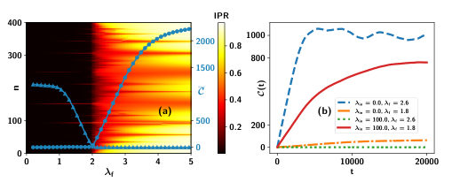
<figcaption class="paper-figure-caption"><b>Fig 1.</b> FIG. 1. (a) Map plot of the inverse participation ratio (IPR) and the long-time averaged spread complexity (right ordinate) for AAH model. We plot the spread complexity for the quenches from the ground state of H(λin = 0) to a higher values of λf (tri- angles), and from the ground state of H(λin = 100) to lower values of λf (circles) against λf (abscissa). The x axis represents the post- quench quasiperiodic potential strength λf and the left y axis repre- sents the index of the Krylov basis. Other parameters are β = 0 and N = 5000. (b) Variation of C(t) (ordinate) with time t (abscissa) for the same phase quench (dashed-dot and dotted lines) and a different- phase quench (solid and dashed...</figcaption>
</figure>
<figure class="paper-figure-card">
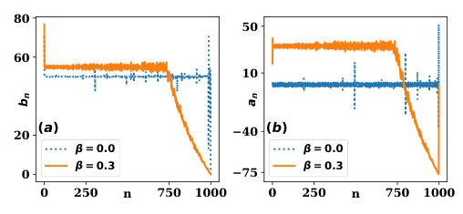
<figcaption class="paper-figure-caption"><b>Fig 2.</b> FIG. 2. Behavior of the Lanczos coefficients as a function of Krylov basis index n. (a) Lanczos coefficients bn for the AAH (β = 0.0) (dotted) and gAAH (β = 0.3) (solid) models. Unlike the AAH model, where bn drops to 0 abruptly near n = DK = 1000, the gAAH model exhibits a gradual decrease in bn after a certain value of n. (b) Lanczos coefficients an for both AAH (β = 0) (dot- ted) an gAAH (β = 0.3) (solid) models against n. In the AAH model an fluctuates around 0, whereas in the gAAH model, it initially fluc- tuates around a positive value before gradually decreasing and even- tually becoming negative. The data are obtained by quenching the highest excited state of λin = 0 to λf = 100.0....</figcaption>
</figure>
<figure class="paper-figure-card">
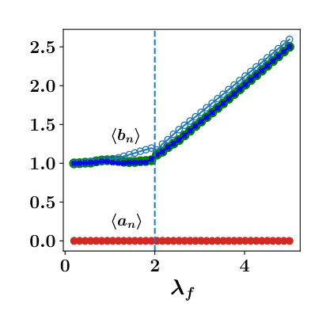
<figcaption class="paper-figure-caption"><b>Fig 3.</b> FIG. 3. Average of the Lanczos coefficients over n as a function of λf for the AAH model (with β = 0). The average of an remains close to 0 for all values of λf for all initial states while ⟨bn⟩is close to 1 upto λf = 2 (extended phase) and then it increases linearly in the localized phase for all the initial states, the ground state (solid cir- cles), the eigenstate from the middle spectrum (hollow circles) and the highest excited state (blue stars). N = 1000. All axes are dimen- sionless.</figcaption>
</figure>
<figure class="paper-figure-card">
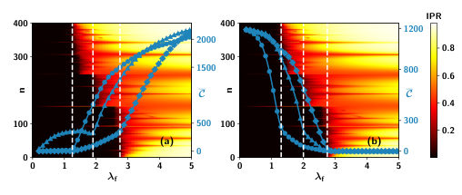
<figcaption class="paper-figure-caption"><b>Fig 4.</b> FIG. 4. (a) Long-time averaged spread complexity for the for- ward and backward quench. The inverse participation ratio (IPR) as a function of λf and the Krylov basis index n when β = 0.3 for the gAAH model where the initial states are the eigenstates of the Hamiltonian with λin = 0. The presence of a mobility edge is clear from the time-averaged spread complexity (values shown on the right side of the plot). The initial states are chosen to be the ground state (squares), a state from the middle spectrum (triangles), and the high- est excited state (circles) for the forward quench. The three white vertical lines indicate the location of the nonanalyticities. (b) Long- time averaged spread...</figcaption>
</figure>
<figure class="paper-figure-card">
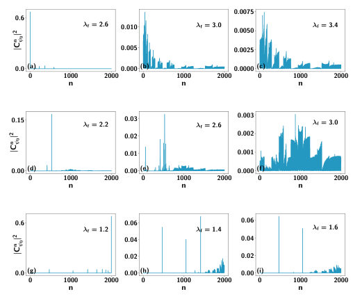
<figcaption class="paper-figure-caption"><b>Fig 5.</b> FIG. 5. Local density of states (LDOS) in the gAAH model. (a)- (c) |Cn ψ0|2 as a function of n, when |ψ0⟩is the ground state at λ = 0 and λf = 2.6, 3.0, 3.4 respectively. At λ = 2.6, |ψ0⟩has support on a very few eigenstates, close to λ = 3.0 where the transition is; this distribution changes dramatically, and the support spreads from a few states to many of the eigenstates. This sudden spread gives rise to the kinks in the average value of complexity. For λ = 3.4, i.e., in the localized phase, the spread is even greater. (d)-(f) The initial state is the state from the middle spectrum of λ = 0 and λf = 2.2, 2.6, 3.0. (g)-(h) The initial state is the highest excited state at λ = 0 and λf =...</figcaption>
</figure>
</div>

<p><strong>Summary.</strong> The paper uses spread complexity as a powerful diagnostic tool to study localization-delocalization transitions in generalized Aubry-André-Harper models. By analyzing how this complexity changes during quantum quenches across different potential regimes, the authors accurately pinpoint mobility edges. This methodology provides deep insights into the underlying single-particle dynamics of quasiperiodic systems.</p>
<p><strong>Why it may be interesting.</strong> This work provides a sophisticated, quantifiable dynamical tool (spread complexity) to map out phase diagrams in quasiperiodic systems, complementing traditional spectral measures like IPR and offering insights into the underlying quantum dynamics near critical points.</p>
<details>
<summary>Detailed structure</summary>
<p><strong>Main problem.</strong> The study investigates spread complexity as a dynamical probe to characterize quantum phase transitions, particularly identifying mobility edges in quasiperiodic systems.</p>
<p><strong>Main result.</strong> Nonanalytic behavior in the long-time averaged spread complexity accurately identifies the mobility-edge transition in generalized AAH models. The Lanczos coefficients also show distinct signatures depending on the presence of such mobility edges.</p>
<p><strong>Method.</strong> The analysis employs time evolution simulations using the Lanczos algorithm to construct a Krylov basis and calculate the long-time averaged spread complexity, alongside analyzing Lanczos coefficients and IPR.</p>
<p><strong>Model / system.</strong> The primary model is the generalized and long-range Aubry-André-Harper (AAH) model, which describes localization phenomena due to competition between hopping and a quasiperiodic onsite potential. The Hamiltonian includes terms for long-range hopping ($\alpha$) and an energy-dependent potential deformation ($eta$).</p>
<p><strong>Key observables.</strong> Spread complexity ($C$), Lanczos coefficients ($\{a_n, b_n\}$), Inverse Participation Ratio (IPR), and moments of the survival amplitude.</p>
<p><strong>Important parameters / regimes.</strong> The quasiperiodicity strength ($\lambda'$), the long-range hopping exponent ($\alpha$), and the potential deformation parameter ($eta$) are key parameters controlling different physical regimes.</p>
<p><strong>Assumptions / limitations.</strong> The analysis focuses on single-particle systems, which is noted as a gap compared to studies in interacting many-body systems. Calculations rely on taking limits (e.g., thermodynamic limit $N 	o \infty$).</p>
<p><strong>Figures summary.</strong> Figures compare IPR and spread complexity ($C$) across different AAH model parameters ($\lambda$), demonstrating phase boundary detection. They also show comparisons of Lanczos coefficients for forward and backward quenches across various hopping ranges (NN, NNN, LR).</p>
<p><strong>Paper structure.</strong> The paper develops the theoretical framework by defining spread complexity and applying it to generalized AAH models undergoing quantum quenches. It presents analytical derivations for moments and then compares the diagnostic power of $C$ against established methods like IPR across different hopping regimes (short-range vs. long-range).</p>
</details>
<details>
<summary>Abstract</summary>
<p>We investigate the spread complexity of quantum quenches in generalized and long-range Aubry-Andre-Harper (AAH) models, encompassing regimes with and without mobility edges. In particular, in the generalized AAH models supporting energy-dependent mobility edges, we demonstrate that the long-time averaged spread complexity exhibits nonanalytic behavior when the post-quench quasiperiodic potential crosses the mobility edge associated with the energy of the initial eigenstate, thereby accurately identifying the mobility-edge transition. Such a behavior is supported by the spreading of local density of states. We further derive analytical expressions for the moments and the corresponding Lanczos coefficients for quenches between the limits of vanishing and strong quasiperiodic potentials. The Lanczos coefficients display qualitatively distinct behavior depending on the presence of mobility edges - they exhibit an initial plateau followed by a decay with the Krylov basis index, in contrast to the nearly constant behavior of the conventional AAH model without mobility edges. For LR hopping, the coefficients decay with the Krylov basis index for quenches from the localized to the extended phase, while they coincide with the AAH results for quenches in the opposite direction.</p>
</details>
<p><sub><a href="#top">↑ back to top</a></sub></p>

<p><a id="paper-2608.01811"></a></p>
<h3 id="universal-scaling-of-the-magnetocaloric-effect-in-2d-ising-monolayers-and-bilayer"><a href="http://arxiv.org/abs/2608.01811v1">Universal Scaling of the Magnetocaloric Effect in 2D Ising Monolayers and Bilayer</a></h3>
<p><strong>Authors:</strong> Basit Iqbal, Kingshuk Sarkar<br>
<strong>Type:</strong> theory · <strong>Category:</strong> statistical mechanics · <strong>PDF:</strong> <a href="https://arxiv.org/pdf/2608.01811v1">https://arxiv.org/pdf/2608.01811v1</a><br>
<strong>Analysis basis:</strong> full PDF text, analyzed in chunks
<strong>Topic relevance:</strong> <code>analog quantum simulation</code> <strong>2/5</strong> · <code>non-equilibrium universality</code> <strong>2/5</strong> · <code>driven-dissipative phase transition</code> <strong>1/5</strong> · <code>exotic spin models in light-matter</code> <strong>1/5</strong> · <code>methods for driven-dissipative</code> <strong>1/5</strong> · <code>non-equilibrium dynamics</code> <strong>1/5</strong></p>
<div class="figure-strip-hint">↔ Scroll figures horizontally</div>
<div class="paper-figures-scroll">
<figure class="paper-figure-card">
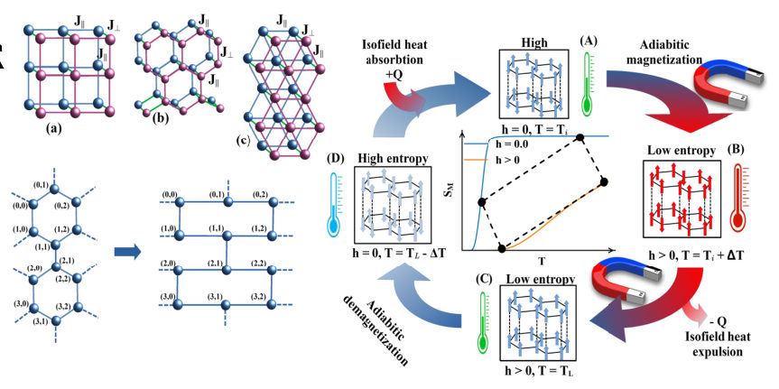
<figcaption class="paper-figure-caption"><b>Fig 1.</b> Figure 1: Schematics: (a) square bilayer, (b) honeycomb bilayer, and (c) triangular bilayer. Monolayer lattices can be considered as one layer in these lattices. (d) Schematic representation of the honeycomb lattice and its equivalent brick model. (e) Schematic representation of a MCE cycle as per the Brayton cycle: (A) →(B) adiabatic magnetization, (B) →(C) isofield heat expulsion, (C) →(D) adiabatic demagnetization, and (D) →(A) isofield heat absorption.</figcaption>
</figure>
<figure class="paper-figure-card">
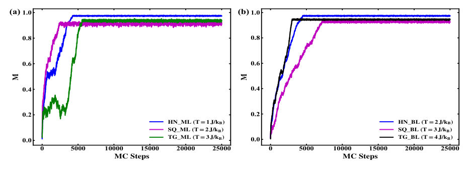
<figcaption class="paper-figure-caption"><b>Fig 2.</b> Figure 2: Variation of M with Monte Carlo (MC) steps plots are displayed for the square, honeycomb, and triangular lattices of (a) monolayer and (b) bilayer cases having L = 128 at fixed temperatures and h = 0.</figcaption>
</figure>
<figure class="paper-figure-card">
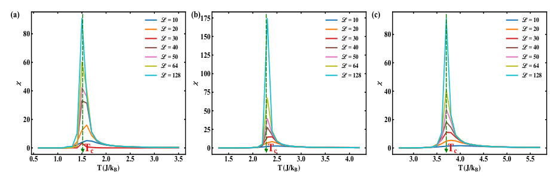
<figcaption class="paper-figure-caption"><b>Fig 3.</b> Figure 3: χ vs. T plots for the (a) honeycomb, (b) square, and (c) triangular lattices for lattice sizes up to L = 128 while h/J = 0. The transition temperature Tc is indicated in each case, which is precisely determined by the Binder cumulant as shown in Fig.4.</figcaption>
</figure>
<figure class="paper-figure-card">
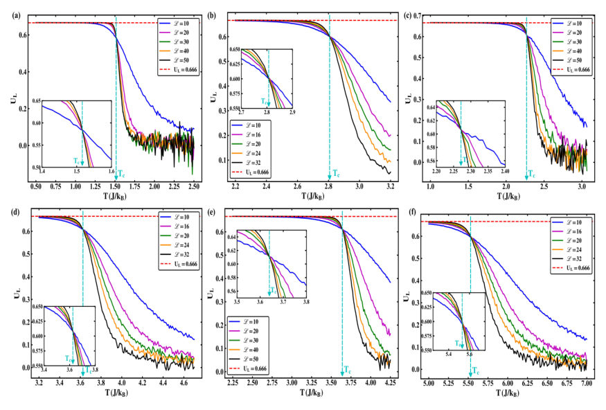
<figcaption class="paper-figure-caption"><b>Fig 4.</b> Figure 4: UL vs. T plots of (a) honeycomb monolayer, (b) honeycomb bilayer, (c) square monolayer, (d) square bilayer, (e) triangular monolayer, and (f) triangular bilayer lattices for different L along the three axes. The cyan-colored vertical dashed lines indicate their transition temperatures (Tc), and the values of the transition temperatures are labeled on the plots.</figcaption>
</figure>
<figure class="paper-figure-card">
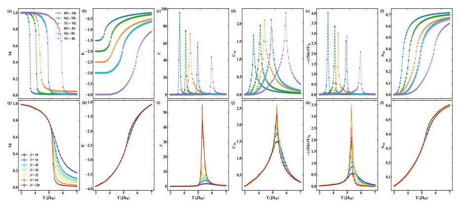
<figcaption class="paper-figure-caption"><b>Fig 5.</b> Figure 5: (a) to (f): Thermodynamic and magnetic quantities for the monolayer and bilayer cases of the square, honeycomb, and triangular lattice for h/J = 0 and L = 128. (g) to (i): Thermodynamic quantities at different lattice sizes L with error bars calculated using the Jackknife method.</figcaption>
</figure>
</div>

<p><strong>Summary.</strong> This work uses Monte Carlo simulations on 2D Ising lattices (monolayer and bilayer) to study the Magnetocaloric Effect. The key finding is that after appropriate normalization, the MCE response collapses onto universal master curves regardless of the lattice's coordination number or layer count. This establishes a robust theoretical framework for designing magnetic refrigerants based on fundamental scaling laws.</p>
<p><strong>Why it may be interesting.</strong> While focused on classical statistical mechanics, the concept of universal scaling laws derived from lattice models is fundamental to understanding critical phenomena in many quantum systems, providing a strong theoretical benchmark for comparison.</p>
<details>
<summary>Detailed structure</summary>
<p><strong>Main problem.</strong> To investigate whether the universal scaling behavior of the Magnetocaloric Effect (MCE) persists across different two-dimensional lattice geometries and layer counts.</p>
<p><strong>Main result.</strong> The normalized MCE observables ($\Delta S_M$ and field exponent $n$) collapse onto a universal master curve, demonstrating that MCE scaling is independent of coordination number or layer count in 2D Ising systems.</p>
<p><strong>Method.</strong> Monte Carlo simulations are used extensively, employing Binder cumulant analysis to precisely determine critical temperatures ($T_c$).</p>
<p><strong>Model / system.</strong> The study uses the ferromagnetic Ising model applied to 2D square, honeycomb, and triangular lattices, considering both monolayer and bilayer configurations.</p>
<p><strong>Key observables.</strong> Isothermal magnetic entropy change ($\Delta S_M$), adiabatic temperature change ($\Delta T_{ad}$), relative cooling power (RCP), and cooling capacity ($q$).</p>
<p><strong>Important parameters / regimes.</strong> Coordination number ($r=3, 4, 6$) and layer count (monolayer/bilayer); magnetic field up to $\sim 2.6$ Tesla.</p>
<p><strong>Assumptions / limitations.</strong> The system is modeled by the Ising Hamiltonian; for bilayers, symmetry ($J_{\parallel}= J_{\perp}$) is assumed in some contexts.</p>
<p><strong>Figures summary.</strong> Figures schematically show lattice structures (square, honeycomb, triangular) and illustrate the MCE cycle analogy. One figure shows how magnetocaloric properties vary with temperature across different lattice sizes and fields.</p>
<p><strong>Paper structure.</strong> The paper details the model formalism, discusses scaling theory and universality, presents results on finite-size analysis of thermodynamic/MCE quantities, covers hysteresis studies, and concludes with implications for magnetic refrigerants.</p>
</details>
<details>
<summary>Abstract</summary>
<p>We report a Monte Carlo study of the magnetocaloric effect (MCE) in two-dimensional ferromagnetic Ising models on square, honeycomb, and triangular lattices with monolayer and bilayer configurations. Using Binder cumulant analysis, we determine the critical temperature ($T_c$) of each structure and find that $T_c$ increases with coordination number, from the honeycomb ($r=3$) to the triangular ($r=6$) lattice. In contrast, the magnetic entropy change ($-ΔS_M$) decreases with coordination number, reaching its maximum for the honeycomb lattice. After normalization by their peak values and appropriate temperature scaling, both $-ΔS_M$ and the field exponent $n$ collapse onto universal master curves for different magnetic fields and across all six lattice structures at a fixed low field. This demonstrates universal MCE scaling independent of coordination number and layer count. Critical scaling analysis further supports the observed universality and power-law behavior. Unlike $-ΔS_M$, the adiabatic temperature change ($ΔT_{ad}$) increases with coordination number, whereas the magnetic Grüneisen parameter ($Γ_M$) follows the same trend as $-ΔS_M$. Although the peak value of $-ΔS_M$ decreases with coordination number, the relative cooling power and cooling capacity remain nearly unchanged due to compensating broadening of the $-ΔS_M$ curves. The field dependence of $-ΔS_M$, relative cooling power, and cooling capacity follows power laws up to $\sim2.6$ T (assuming $J\approx1$ meV). Hysteresis analysis shows that lattices with lower coordination numbers exhibit a faster reduction in loop width with increasing temperature. These results establish the universal scaling behavior of the magnetocaloric effect in two-dimensional monolayer and bilayer magnetic lattices and provide guidelines for designing magnetic refrigerants.</p>
</details>
<p><sub><a href="#top">↑ back to top</a></sub></p>

<p><a id="paper-2608.00241"></a></p>
<h3 id="from-flight-logs-to-atmospheric-science-paragliders-as-convection-sensors-for-identifying-thermal-predictors"><a href="http://arxiv.org/abs/2608.00241v1">From Flight Logs to Atmospheric Science: Paragliders as Convection Sensors for Identifying Thermal Predictors</a></h3>
<p><strong>Authors:</strong> César Hernández-Aguayo, Matthieu Cristelli, Michael Benzaquen<br>
<strong>Type:</strong> experiment · <strong>Category:</strong> statistical mechanics · <strong>PDF:</strong> <a href="https://arxiv.org/pdf/2608.00241v1">https://arxiv.org/pdf/2608.00241v1</a><br>
<strong>Analysis basis:</strong> full PDF text, analyzed in chunks
<strong>Topic relevance:</strong> <code>non-equilibrium dynamics</code> <strong>2/5</strong> · <code>non-equilibrium universality</code> <strong>2/5</strong> · <code>Keldysh / 2PI / non-Gaussian methods</code> <strong>1/5</strong> · <code>driven-dissipative phase transition</code> <strong>1/5</strong> · <code>methods for driven-dissipative</code> <strong>1/5</strong></p>
<div class="figure-strip-hint">↔ Scroll figures horizontally</div>
<div class="paper-figures-scroll">
<figure class="paper-figure-card">
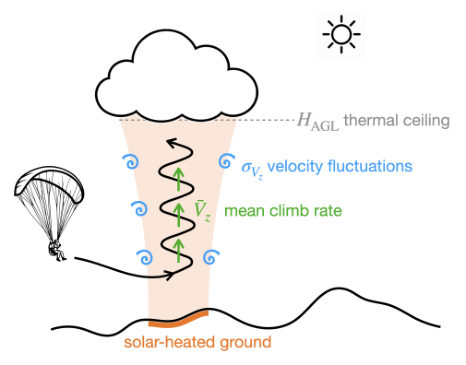
<figcaption class="paper-figure-caption"><b>Fig 1.</b> FIG. 1. Schematic of a paragliding climbing segment during which the pilot circles within a thermal column. The updraft rises from the heated surface up to a maximum altitude, which may correspond to either the dry or wet thermal ceiling, depending on atmospheric con- ditions. From such climbing segments, we extract three physical ob- servables (see Section III A): thermal strength ¯Vz, which probes the intensity of buoyancy generation; vertical velocity variability σVz, reflecting the amplitude of small-scale updraft fluctuations; and ther- mal ceiling HAGL, measuring the vertical extent of convection.</figcaption>
</figure>
<figure class="paper-figure-card">
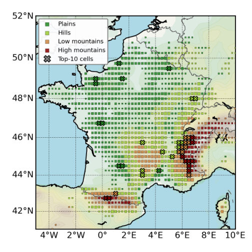
<figcaption class="paper-figure-caption"><b>Fig 2.</b> FIG. 2. Spatial distribution of climbing activity over France. Active ERA5 grid cells are colored by terrain class following the four-class elevation scheme of Eq. 1. Cell area is proportional to the logarithm of the segment count. Colored cross markers correspond to the ten highest-activity cells per terrain (forty cells total). The background shading shows the ground elevation derived from the ERA5 surface geopotential.</figcaption>
</figure>
<figure class="paper-figure-card">
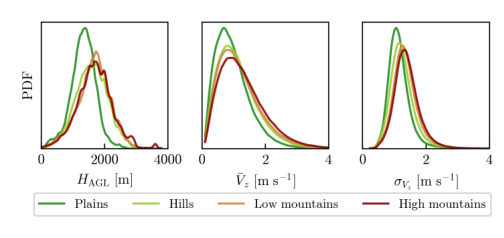
<figcaption class="paper-figure-caption"><b>Fig 3.</b> FIG. 3. Probability density functions of the three climbing observ- ables per terrain class: thermal ceiling HAGL (left), thermal strength ¯Vz (middle), and vertical velocity variability σVz (right).</figcaption>
</figure>
<figure class="paper-figure-card">
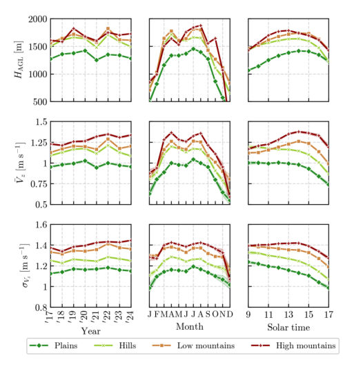
<figcaption class="paper-figure-caption"><b>Fig 4.</b> FIG. 4. Temporal evolution of the average climbing observables across three time scales. Rows show thermal ceiling HAGL (top), thermal strength ¯Vz (middle), and vertical-velocity variability σVz (bottom). Columns show interannual evolution (left), seasonal or monthly evolution (centre), and diurnal evolution (right, solar hour). Lines are coloured by terrain class.</figcaption>
</figure>
<figure class="paper-figure-card">
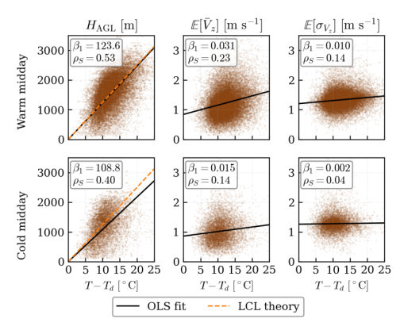
<figcaption class="paper-figure-caption"><b>Fig 5.</b> FIG. 5. LCL benchmark scatter for the Low mountains terrain at midday (12–14h solar). Rows: Warm season (top, n = 29,023 cell- hours) and Cold season (bottom, n = 8,217). Columns: thermal ceiling HAGL (left), mean climb rate E[ ¯Vz] (centre), and climb tur- bulence E[σVz] (right), each plotted against the dewpoint depression T−Td. Each brown dot is one cell-hour observation. The black solid line is the OLS fit (origin-constrained for HAGL, Eq. 12; with inter- cept for the velocity moments, Eq. 13). In the HAGL panels, the orange dashed line shows the theoretical LCL slope of 125m/○C. Each panel indicates the corresponding fitted slope β1 (m/○C for HAGL; ms−1/○C for the velocity moments) and...</figcaption>
</figure>
</div>

<p><strong>Summary.</strong> This paper introduces a massive dataset derived from paragliding flight logs to study atmospheric thermal convection. By analyzing diagnostics like thermal strength and ceiling height, the authors successfully identified that boundary-layer height is the primary predictor controlling these convective features across various terrains and seasons. The work demonstrates the utility of crowdsourced data for advancing fundamental understanding in atmospheric physics.</p>
<p><strong>Why it may be interesting.</strong> While focused on meteorology, the rigorous statistical framework used to identify leading macroscopic predictors (like boundary-layer height) from complex, multi-scale observational data shares methodological parallels with identifying critical control parameters in non-equilibrium statistical systems.</p>
<details>
<summary>Detailed structure</summary>
<p><strong>Main problem.</strong> Understanding fundamental questions about atmospheric thermal structure, such as the onset and intensity of convection, due to limited in situ observational coverage.</p>
<p><strong>Main result.</strong> Boundary-layer height emerged as the leading independent predictor for both ceiling height and thermal strength across all terrains and seasons. The empirical relationship between ceiling height and temperature-dewpoint depression matched theoretical LCL scaling with high precision.</p>
<p><strong>Method.</strong> The study aggregates data from paragliding flight logs, extracting diagnostics like thermal strength and ceiling height, and correlates these observables with global atmospheric reanalysis data (ERA5) using an orthogonalized regression framework.</p>
<p><strong>Model / system.</strong> The physical system is the atmosphere undergoing thermal convection. The data source is a novel dataset derived from 1.47 million climbing segments recorded by paragliders over metropolitan France between 2017 and 2024.</p>
<p><strong>Key observables.</strong> Thermal strength ($ar{V}_z$), vertical velocity variability ($\sigma V_z$), and thermal ceiling height ($H_{AGL}$).</p>
<p><strong>Important parameters / regimes.</strong> Terrain type (Plains, Hills, Low mountains, High mountains), season, time of day, cloud state, soil moisture index, and boundary-layer height.</p>
<p><strong>Assumptions / limitations.</strong> The dataset is limited to solar hours 9–17h; coastal cells are excluded as lift relies on dynamic rather than thermal convection; the analysis uses ERA5 reanalysis data for context.</p>
<p><strong>Figures summary.</strong> Figures show spatial distribution of activity across terrain classes, empirical PDFs of observables varying by terrain (e.g., $H_{AGL}$ peaking differently in Plains vs. Mountains), and temporal evolution showing seasonal/diurnal cycles.</p>
<p><strong>Paper structure.</strong> The paper first establishes the observational resource from paragliding data, then details the extraction of three key diagnostics ($ar{V}_z$, $\sigma V_z$, $H_{AGL}$), followed by a comprehensive analysis correlating these observables with various geophysical predictors using regression techniques.</p>
</details>
<details>
<summary>Abstract</summary>
<p>Atmospheric thermal convection drives boundary-layer dynamics and vertical exchange of heat, moisture, and momentum, yet fundamental questions about thermal structure remain open due to limited in situ observational coverage. We introduce a novel high-resolution observational dataset for atmospheric convection based on paragliding flight logs collected over metropolitan France during 2017-2024. Paragliders probe thermal updrafts by circling within them while carrying GPS variometers that record position and altitude; each climbing segment samples the vertical velocity field within a thermal column. Aggregated across 1.47 million climbing segments from 110,730 flights, this dataset provides unprecedented spatial coverage and temporal resolution. To demonstrate the value of this observational resource, we extract three physically distinct observables from climbing segments and characterize their dependence on terrain, season, time of day, cloud state, and soil moisture. Coupling the paragliding observations with global atmospheric reanalysis data (ERA5, 0.25 degrees hourly) through an orthogonalized regression framework against 118 physically interpretable predictors, we identify leading atmospheric predictors of these observables. The empirical relationship between ceiling height and temperature-dewpoint depression matches the theoretical lifting condensation level scaling with striking precision supporting our methodology. Boundary-layer height emerges as the leading independent predictor of both ceiling height and thermal strength across all terrains and seasons, while vertical-velocity variability is controlled by surface heat-flux and wind variables. Taken together, our results highlight the utility of crowdsourced flight-log data for investigating atmospheric convection.</p>
</details>
<p><sub><a href="#top">↑ back to top</a></sub></p>

<p><a id="paper-2608.02427"></a></p>
<h3 id="caustics-and-superenergy-in-the-quantum-bouncer"><a href="http://arxiv.org/abs/2608.02427v1">Caustics and Superenergy in the Quantum Bouncer</a></h3>
<p><strong>Authors:</strong> Marko. M. Ćosić, Andrew N. Jordan<br>
<strong>Type:</strong> theory · <strong>Category:</strong> other · <strong>PDF:</strong> <a href="https://arxiv.org/pdf/2608.02427v1">https://arxiv.org/pdf/2608.02427v1</a><br>
<strong>Analysis basis:</strong> full PDF text, analyzed in chunks
<strong>Topic relevance:</strong> <code>Keldysh / 2PI / non-Gaussian methods</code> <strong>2/5</strong> · <code>quantum measurements</code> <strong>2/5</strong> · <code>methods for driven-dissipative</code> <strong>1/5</strong> · <code>non-equilibrium dynamics</code> <strong>1/5</strong></p>
<div class="figure-strip-hint">↔ Scroll figures horizontally</div>
<div class="paper-figures-scroll">
<figure class="paper-figure-card">
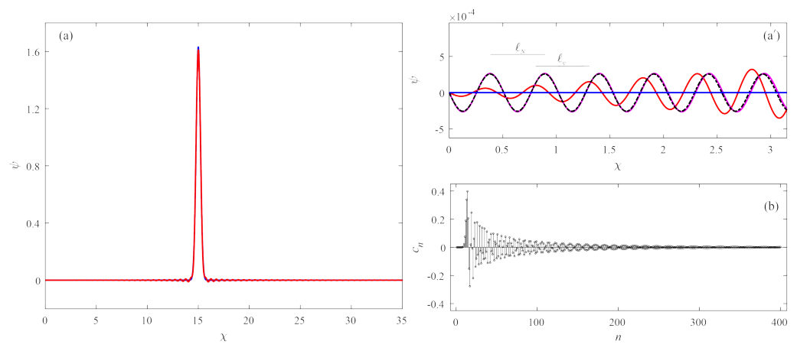
<figcaption class="paper-figure-caption"><b>Fig 1.</b> FIG. 1. (a) The initial state ψ0(τ) (the blue line), and its corresponding energy-limited approximation ψN(χ, 0) (the red line) for χ0 = 15, σ = 0.15, and N = 400. (a’) Enlarged view in the vicinity of the coordinate origin. The magenta line shows cNφN(χ), its harmonic approximation AN sin(|zN|χ) is shown by the dashed black line. (b) Stem plot of expansion coefficients cn calculated according to Eq. (19). Lines ℓN and ℓψ indicate the local wavelengths of cNφN(χ) and ψN(χ, 0) respectively.</figcaption>
</figure>
<figure class="paper-figure-card">
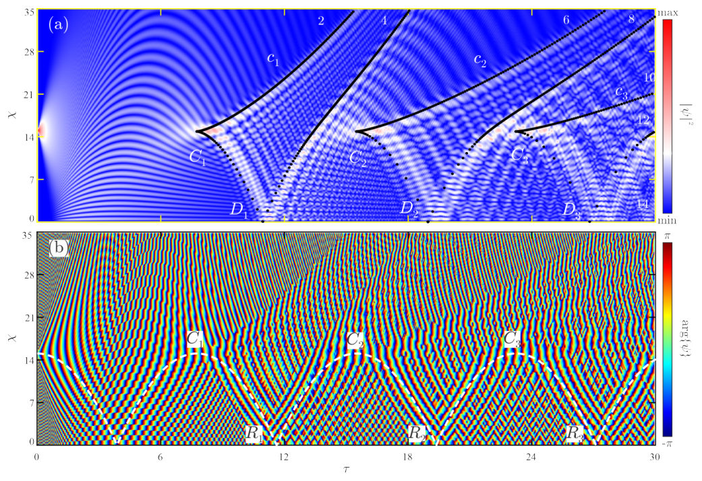
<figcaption class="paper-figure-caption"><b>Fig 2.</b> FIG. 2. (a) Log-scale probability density |ψ(χ, τ)|2 and (b) phase arg{ψ(χ, τ)} for χ0 = 15, σ = 0.15, and N = 400. Dotted black lines show the envelope of classical trajectories χ(τ; χ0, ˙χ0) starting at χ0 with varying initial velocities. Numbers denote point multiplicities in regions bounded by caustics c1, c2, c3. The white dashed line is the reference trajectory χ(τ; χ0, 0). Cusps of caustics and turning points of the reference trajectory are labeled C1, C2, C3. Rebound points of downward caustic branches are D1, D2, D3, with corresponding reference trajectory rebounds R1, R2, R3.</figcaption>
</figure>
<figure class="paper-figure-card">
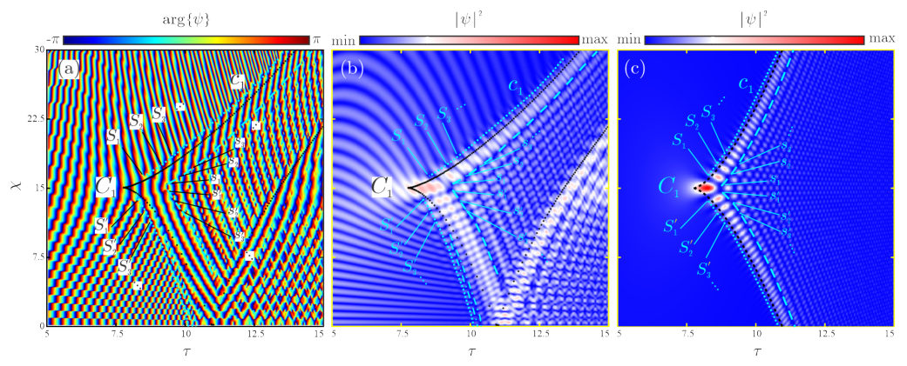
<figcaption class="paper-figure-caption"><b>Fig 3.</b> FIG. 3. (a,b) Magnified views of arg{ψN(χ, τ)} and |ψN(χ, τ)|2 near the cusp point C1 = (χ0, 2√χ0). (c) The local catastrophic approximation |ψN(χ, τ)|2 ≈|P((τC1 −τ)/¯τC1, (χ −χC1)/¯χC1)|2. Black dotted lines mark classical caustic lines in (a,b) and the bifurcation set of the optimal catastrophic polynomial A4 in (c). Dashed and dotted cyan lines show singularity chains on the bright and dark sides of the caustics, respectively. Dot-dash cyan lines indicate additional singularity chains generated by four-wave interference. We take N = 400 in this plot.</figcaption>
</figure>
<figure class="paper-figure-card">
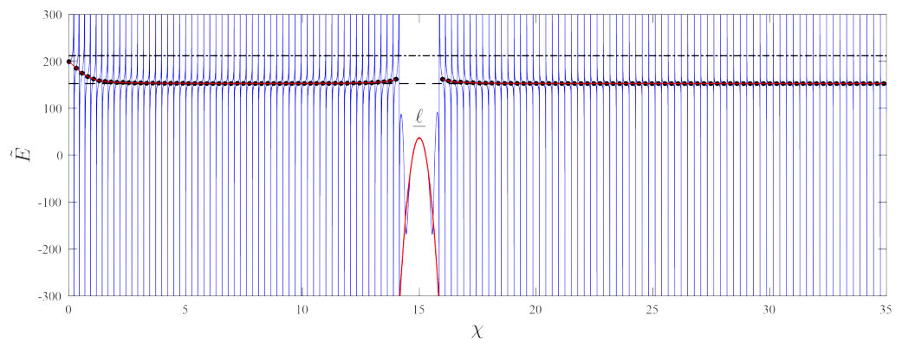
<figcaption class="paper-figure-caption"><b>Fig 4.</b> FIG. 4. The local energy values ˜EN(χ, 0) (blue) are plotted versus χ, with its inflection point in the superbehaving region marked by black circles. The dot-dashed and dashed black lines indicate the energy levels ε = k2 ψ and ε = εN, respectively. The limiting distribution ˜E(χ, 0) is shown in red. Line ℓshows the span of the positivity interval (43). The black-dotted-red line show the poly-lines (χij, ˜E(χij)).</figcaption>
</figure>
<figure class="paper-figure-card">
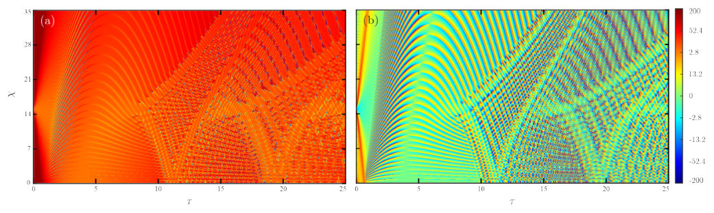
<figcaption class="paper-figure-caption"><b>Fig 5.</b> FIG. 5. (a,b) Evolution of Re{ ˜EN(χ, τ)} and Im{ ˜EN(χ, τ)}, respectively, for χ0 = 15, σ = 0.15, and N = 400. For clearer visualization, both functions were restricted to the interval [−200, 200]. For this choice of parameters, εN ≈152.529.</figcaption>
</figure>
</div>

<p><strong>Summary.</strong> This paper analyzes how classical caustics manifest in the quantum realm using the 'quantum bouncer' model. It connects these quantum caustics to advanced mathematical functions like the Pearcey function and quantifies superenergy—regions where local energy exceeds expected bounds. The methodology combines wavepacket propagation with deep semiclassical asymptotic analysis.</p>
<p><strong>Why it may be interesting.</strong> This work bridges semiclassical mechanics, wave propagation phenomena (caustics), and non-classical energy measurements (superenergy) within a concrete quantum mechanical model relevant for measurement physics.</p>
<details>
<summary>Detailed structure</summary>
<p><strong>Main problem.</strong> The paper investigates quantum interference and energetic phenomena associated with classical caustics, termed "quantum caustics," in a confined quantum system.</p>
<p><strong>Main result.</strong> It demonstrates that caustics are exhibited by Gaussian wavepackets, connecting phase singularity chains near these caustics to the semiclassical Pearcey function. The study also quantifies superenergy regions where local energy exceeds expected eigenvalue bounds.</p>
<p><strong>Method.</strong> The analysis employs Gaussian wavepacket propagation, semiclassical approximations (like those involving Airy functions), and alternative descriptions using Madelung/Bohm trajectories.</p>
<p><strong>Model / system.</strong> The primary model is the quantum bouncer—a particle confined to $x \ge 0$ by a linear potential $V(x) = mgx$. The dynamics are governed by the time-dependent Schrödinger equation, analyzed via eigenfunction expansions.</p>
<p><strong>Key observables.</strong> Quantum caustics, Superenergy ($   ilde{E}(x, t)$), Local observable $ ilde{O}(x)$, and phase singularity chains.</p>
<p><strong>Important parameters / regimes.</strong> The analysis depends on the initial Gaussian wavepacket parameters ($\sigma, \chi_0$) and the system's confinement potential strength (related to $\alpha$ in dimensionless units).</p>
<p><strong>Assumptions / limitations.</strong> The study relies on approximating the state as a finite superposition of eigenfunctions and analyzing asymptotic forms derived from Airy functions.</p>
<p><strong>Figures summary.</strong> Not specified by notes, but appendices suggest figures illustrating the Pearcey function construction and wave function evolution near singularities.</p>
<p><strong>Paper structure.</strong> The paper moves from defining the problem (quantum caustics/superenergy) in the quantum bouncer model to developing mathematical tools using Gaussian packets and asymptotic analysis. It culminates in applying these tools to relate caustic behavior to catastrophe theory via the Pearcey integral.</p>
</details>
<details>
<summary>Abstract</summary>
<p>We investigate the quantum interference and energetic phenomena associated with classical caustics in the quantum bouncing ball problem, we refer to as quantum caustics. By considering an initial Gaussian wavepacket, we show that caustics associated with the underlying classical trajectory families are exhibited. We connect the associated phase singularity chains in the vicinity of the caustic with the semiclassical Pearcey function built on the cusp catastrophe lines. We also quantify the amount of superenergy exhibited in these solutions - regions of space where the local energy exceeds the largest constituent energy eigenvalue. We give a complimentary description of the caustic and superenergy behavior using the Madelung/Bohm trajectories, which gives additional insight about the energy of the trajectories and how they traverse the phase singularity chains.</p>
</details>
<p><sub><a href="#top">↑ back to top</a></sub></p>

<p><a id="paper-2608.02057"></a></p>
<h3 id="quantum-vortices-in-a-boundary-layer-new-results-and-perspectives"><a href="http://arxiv.org/abs/2608.02057v1">Quantum Vortices in a Boundary Layer: New Results and Perspectives</a></h3>
<p><strong>Authors:</strong> Sergei V. Talalov<br>
<strong>Type:</strong> theory · <strong>Category:</strong> other · <strong>PDF:</strong> <a href="https://arxiv.org/pdf/2608.02057v1">https://arxiv.org/pdf/2608.02057v1</a><br>
<strong>Analysis basis:</strong> full PDF text, analyzed in chunks
<strong>Topic relevance:</strong> <code>non-equilibrium dynamics</code> <strong>2/5</strong> · <code>Keldysh / 2PI / non-Gaussian methods</code> <strong>1/5</strong> · <code>driven-dissipative phase transition</code> <strong>1/5</strong> · <code>methods for driven-dissipative</code> <strong>1/5</strong></p>
<div class="figure-strip-hint">↔ Scroll figures horizontally</div>
<div class="paper-figures-scroll">
<figure class="paper-figure-card">
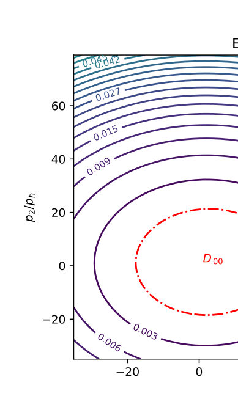
<figcaption class="paper-figure-caption"><b>Fig 1.</b> Figure 1: Energy levels for (κv)1 = 5, (κv)2 = 3.</figcaption>
</figure>
<figure class="paper-figure-card">
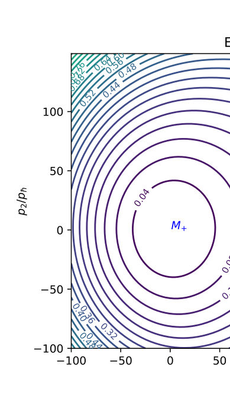
<figcaption class="paper-figure-caption"><b>Fig 2.</b> Figure 2: Energy levels for (κv)1 = 250, (κv)2 = 70.</figcaption>
</figure>
<figure class="paper-figure-card">
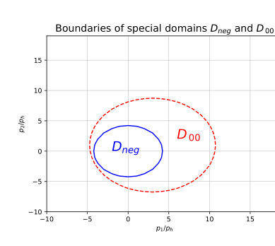
<figcaption class="paper-figure-caption"><b>Fig 3.</b> Figure 3: Domain’s boundaries for (κv)1 = 3, (κv)2 = 1.</figcaption>
</figure>
<figure class="paper-figure-card">
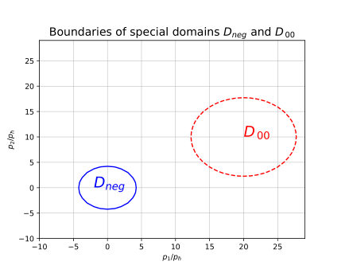
<figcaption class="paper-figure-caption"><b>Fig 4.</b> Figure 4: Domain’s boundaries for (κv)1 = 20, (κv)2 = 10.</figcaption>
</figure>
</div>

<p><strong>Summary.</strong> This paper theoretically analyzes the motion and quantization of quantum vortices near a planar boundary layer. Using group theory and novel quantization methods, it derives an energy spectrum showing complex dependence on external flow velocity. The results highlight that vortex stability depends critically on parameters, potentially leading to negative effective masses in certain quantum regimes.</p>
<p><strong>Why it may be interesting.</strong> This work provides advanced theoretical tools for analyzing vortex dynamics in confined quantum fluids, touching upon concepts of effective mass and spectral stability relevant to superfluidity and quantum turbulence.</p>
<details>
<summary>Detailed structure</summary>
<p><strong>Main problem.</strong> The study investigates the quantum dynamics of a thin circular vortex filament situated near an infinite planar boundary surface.</p>
<p><strong>Main result.</strong> The energy spectrum exhibits complex dependence on external fluid velocity, and the inverse effective mass tensor can possess both positive and negative values in certain quantum states.</p>
<p><strong>Method.</strong> The authors employ a novel quantization method for classical closed vortex filaments, utilizing group theory (e.g., centrally-extended Galilean group) to derive an effective Hamiltonian structure.</p>
<p><strong>Model / system.</strong> The system models quantized vortices near a boundary layer, treated as quantized dynamical systems rather than purely topological defects. The dynamics are governed by an effective Hamiltonian incorporating particle motion and harmonic oscillator terms.</p>
<p><strong>Key observables.</strong> Vortex energy spectrum $E = E({f p})$, inverse effective mass tensor, and quantized circulation $\Gamma_\lambda$.</p>
<p><strong>Important parameters / regimes.</strong> External fluid velocity $\mathbf{v}$, quantum numbers ($n$), dimensionless parameters ($\kappa, \kappa_v$), and critical values like $\kappa_{cr}$.</p>
<p><strong>Assumptions / limitations.</strong> The surrounding fluid velocity $\mathbf{v}$ is assumed parallel to the planar surface. The analysis often relies on approximations derived from spectral problems or small parameter expansions.</p>
<p><strong>Figures summary.</strong> Figures illustrate energy levels for varying external velocities, showing domain boundaries ($\hbar_{	ext{neg}}, \hbar_{00}$) that dictate whether vortex modes are stable or unstable.</p>
<p><strong>Paper structure.</strong> The paper progresses by first establishing the classical dynamics and Hamiltonian structure near the boundary. It then applies a novel quantization procedure to determine quantized circulation values. Finally, it performs stability analysis on the energy spectrum to map out regimes where vortices can exist.</p>
</details>
<details>
<summary>Abstract</summary>
<p>Here, we investigate the motion of a thin circular quantum vortex filament near the infinite planar surface. The fluid surrounding this surface moves with a non-zero velocity $\bf{v}$, which is parallel to the surface. We study the specific features of this quantum system and show that they are quite suitable for the boundary layer theory. The developed model allows us to calculate the vortex energy spectrum, $E = E({\bf p})$, where ${\bf p}$ is the total momentum of a vortex ring.  We have demonstrated that this function has complex non-trivial dependence on the velocity $\bf{v}$. It is stated that the inverse effective mass of a vortex under consideration is of a tensorial nature. In certain quantum states, the system shows the possibility of both negative and positive effective mass existing. This study employs a novel quantization method for classical closed vortex filaments, developed by the author earlier.</p>
</details>
<p><sub><a href="#top">↑ back to top</a></sub></p>

<p><a id="paper-2608.01316"></a></p>
<h3 id="compiler-framework-for-3d-neutral-atom-quantum-computers"><a href="http://arxiv.org/abs/2608.01316v1">Compiler Framework for 3D Neutral-Atom Quantum Computers</a></h3>
<p><strong>Authors:</strong> Chen Huang, Zhemin Zhang, Zhao Zhang, Xudong Lv, Zhiding Liang<br>
<strong>Type:</strong> theory · <strong>Category:</strong> quantum information and computing · <strong>PDF:</strong> <a href="https://arxiv.org/pdf/2608.01316v1">https://arxiv.org/pdf/2608.01316v1</a><br>
<strong>Analysis basis:</strong> full PDF text, analyzed in chunks
<strong>Topic relevance:</strong> <code>QC/QI experiment</code> <strong>2/5</strong> · <code>Rydberg arrays</code> <strong>1/5</strong> · <code>analog quantum simulation</code> <strong>1/5</strong></p>
<div class="figure-strip-hint">↔ Scroll figures horizontally</div>
<div class="paper-figures-scroll">
<figure class="paper-figure-card">
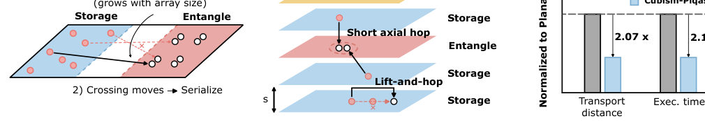
<figcaption class="paper-figure-caption"><b>Fig 1.</b> Fig. 1. Why 3D compilation. (a) A zoned planar architecture requires lateral transport that grows with array size, and the no-crossing constraint serializes conflicting moves. (b) Piqasso stacks storage, an entanglement layer zE, and a readout layer along z: gate pairs rendezvous via short axial hops, and blocked moves detour through a free transit layer (lift-and-hop). (c) Across 34 circuits from QASMBench and VeriQBench, Piqasso moves atoms 2.1× less and is faster on 32 of 34 circuits.</figcaption>
</figure>
<figure class="paper-figure-card">
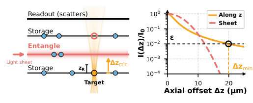
<figcaption class="paper-figure-caption"><b>Fig 2.</b> Fig. 2. Propagation direction governs layer selectivity. Left: stacked register, side view. The workhorse beams (traps, tweezers, focused Rz addressing) propagate along z and thread the entire stack: a beam focused on its target atom (waist w0) still illuminates the column neighbor through the slow on- axis tail, forcing the axial clearance ∆zmin. The in-plane Rydberg light sheet is confined to the entanglement layer zE, and readout occurs only on the far- separated readout layer. Right: the two decay scales behind this asymmetry. Along z the intensity falls only algebraically, reaching the crosstalk budget ϵ at ∆zmin, whereas the sheet’s transverse Gaussian tail is exponentially suppressed...</figcaption>
</figure>
<figure class="paper-figure-card">
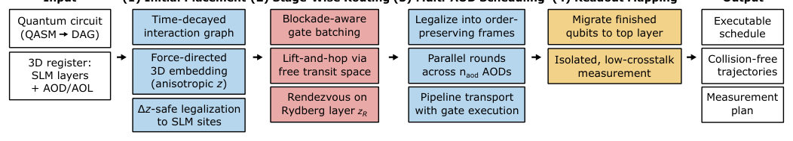
<figcaption class="paper-figure-caption"><b>Fig 3.</b> Fig. 3. The Piqasso compilation pipeline: (i) clearance-aware initial placement, (ii) stage-wise routing via entanglement-layer rendezvous, (iii) multi-AOD transport-round scheduling with cross-round pipelining, and (iv) readout mapping to the readout layer; the output is an executable schedule with collision-free trajectories and a measurement plan.</figcaption>
</figure>
<figure class="paper-figure-card">
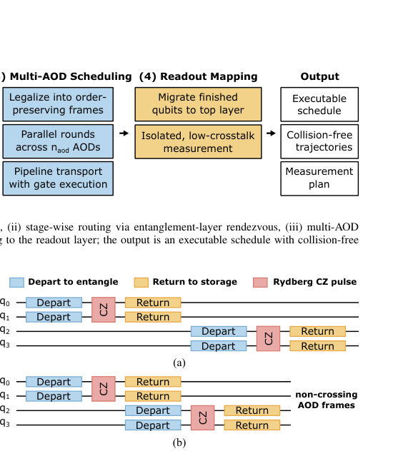
<figcaption class="paper-figure-caption"><b>Fig 4.</b> Fig. 4. Cross-round pipelining. (a) In a planar machine the return of pulse round and the ascent of pulse round move in opposite directions through a shared plane, forcing tone crossings that serialize the handoff. (b) In Cubism these moves are near-axial and pack into non-crossing frames; lift-and-hop detours any residual crossing through a free transit layer, so the axial round trips do not inflate the transport-round count.</figcaption>
</figure>
<figure class="paper-figure-card">
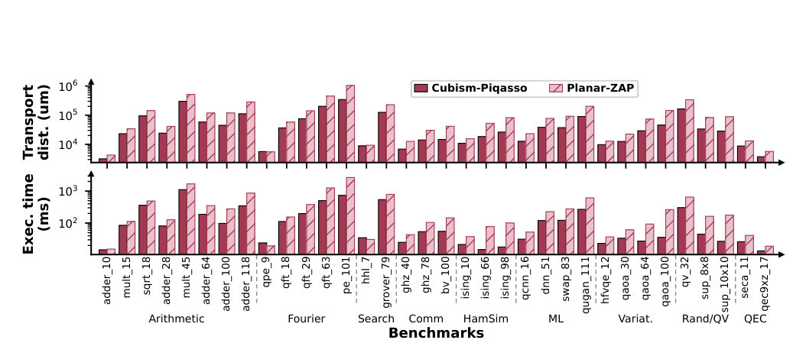
<figcaption class="paper-figure-caption"><b>Fig 5.</b> Fig. 5. Per-circuit transport distance (top) and circuit execution time (bottom) across the full 34-circuit application suite, for Cubism-Piqasso and the Planar- ZAP baseline (both log scale). Circuits are grouped by functional class and sorted by qubit count within each class. Piqasso moves atoms less on every circuit and runs faster on 32 of 34, with the gap widening on larger circuits; the two exceptions (hhl n7 and qpe n9) are small enough that the fixed axial hop is not yet amortized.</figcaption>
</figure>
</div>

<p><strong>Summary.</strong> The paper introduces Piqasso, a novel compiler framework designed for 3D neutral-atom quantum computers that overcomes the limitations of existing 2D compilers. By treating the axial dimension as a schedulable resource and implementing 'lift-and-hop' routing, it drastically reduces atom movement distance and increases execution speed on complex circuits. This advancement is crucial for scaling up programmable quantum processors.</p>
<p><strong>Why it may be interesting.</strong> This work directly addresses the scaling bottleneck in neutral-atom quantum computing by providing a necessary software layer (the compiler) to exploit the physical 3D capabilities of the hardware platform. It bridges advanced AMO physics with computational complexity theory.</p>
<details>
<summary>Detailed structure</summary>
<p><strong>Main problem.</strong> Existing quantum circuit compilers assume flat (2D) geometries, which is suboptimal for scaling neutral-atom quantum computers that can operate in three dimensions.</p>
<p><strong>Main result.</strong> The proposed compiler, Piqasso, significantly outperforms state-of-the-art planar compilers by reducing atom transport distance by 2.1x and achieving up to 7.3x faster execution on complex circuits.</p>
<p><strong>Method.</strong> Piqasso is an end-to-end 3D compiler that integrates clearance-aware placement, conflict-aware routing using 'lift-and-hop' detours, and a multi-AOD scheduler for parallel transport scheduling.</p>
<p><strong>Model / system.</strong> The system utilizes neutral atoms trapped in programmable optical tweezer arrays arranged in a layered 'Cubism' architecture along the z-axis. This stack separates storage, entanglement, and readout functions into distinct layers.</p>
<p><strong>Key observables.</strong> Total atom transport distance (reduction factor), execution time (speedup factor), movement fidelity, and number of serialized transport rounds.</p>
<p><strong>Important parameters / regimes.</strong> Minimum axial clearance ($\Delta z_{\min}$), maximum AOL range ($Z_{\max}$), and the dimensionality of the required quantum circuit.</p>
<p><strong>Assumptions / limitations.</strong> The primary assumption is that exploiting the third dimension resolves key planar limitations related to growing transport distance, dephasing during long travel, and move serialization due to crossing conflicts.</p>
<p><strong>Figures summary.</strong> Figure 1 contrasts the axial-rendezvous design (Piqasso) with zoned planar alternatives. Figure 2 illustrates beam propagation, showing how focused Gaussian beams thread the stack while in-plane Rydberg light sheets are confined to dedicated entanglement layers.</p>
<p><strong>Paper structure.</strong> The paper develops a fidelity-driven optimization framework for 3D compilation, detailing components like clearance-aware placement and conflict-aware routing. It then presents Piqasso's implementation, demonstrating performance gains over planar methods by treating the axial coordinate as a first-class resource.</p>
</details>
<details>
<summary>Abstract</summary>
<p>Neutral-atom quantum computers can now arrange atoms in three-dimensional tweezer arrays, yet every existing compiler assumes a flat geometry. We present Piqasso, a compiler that exploits the vertical axis by stacking storage, entanglement, and readout into distinct layers. Its pipeline pairs an analytical placement respecting axial-clearance optics with a router that brings gate partners together via short vertical hops---bypassing in-plane crossing conflicts through out-of-plane detours---and a multi-AOD scheduler that parallelizes transport across focal planes. On 34 circuits, Piqasso reduces atom transport distance by 2.1$\times$ over a state-of-the-art planar compiler, yielding up to 7.3$\times$ faster execution, 2.2$\times$ higher movement fidelity, and 1.8$\times$ fewer serialized transport rounds, with all gains widening at scale.</p>
</details>
<p><sub><a href="#top">↑ back to top</a></sub></p>

<p><a id="paper-2608.00733"></a></p>
<h3 id="how-not-to-build-control-target-gates-in-semiconductor-quantum-dots-and-beyond"><a href="http://arxiv.org/abs/2608.00733v1">How NOT to build control-target gates in semiconductor quantum dots and beyond</a></h3>
<p><strong>Authors:</strong> Roman Korol, John Nichol, Ignacio Franco<br>
<strong>Type:</strong> theory · <strong>Category:</strong> quantum information and computing · <strong>PDF:</strong> <a href="https://arxiv.org/pdf/2608.00733v1">https://arxiv.org/pdf/2608.00733v1</a><br>
<strong>Analysis basis:</strong> full PDF text, analyzed in chunks
<strong>Topic relevance:</strong> <code>QC/QI experiment</code> <strong>2/5</strong> · <code>methods for driven-dissipative</code> <strong>1/5</strong> · <code>spintronics-quantum-optics interface</code> <strong>1/5</strong></p>
<div class="figure-strip-hint">↔ Scroll figures horizontally</div>
<div class="paper-figures-scroll">
<figure class="paper-figure-card">
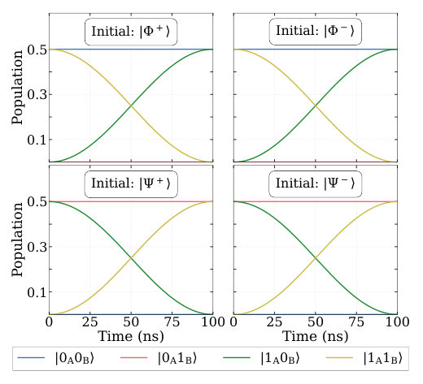
<figcaption class="paper-figure-caption"><b>Fig 1.</b> FIG. 1. Ideal CNOT gate operation in a hetero- geneous qubit encoding. Four Bell states (|Φ˘y “ 1 ?</figcaption>
</figure>
<figure class="paper-figure-card">
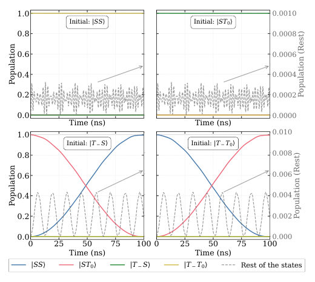
<figcaption class="paper-figure-caption"><b>Fig 2.</b> FIG. 2. CNOT in the presence of leakage states. Time evolution over the gate duration of 100 ns of the four-spin sys- tem. Note that the population outside of the computational space is plotted in gray on a secondary y-axis which is zoomed in by a factor of 1000 (panels a,b) and a factor of 100 (panels c,d).</figcaption>
</figure>
<figure class="paper-figure-card">
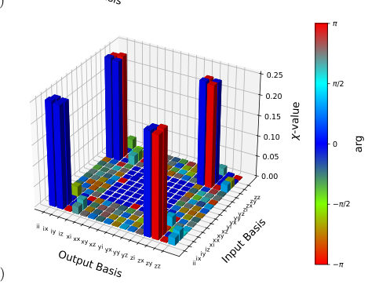
<figcaption class="paper-figure-caption"><b>Fig 3.</b> FIG. 4. The χ-matrix characterizing the proposed CNOT pulse applied to a pair of double quantum dots with (a) TB “ 0 featuring 99.6% gate fidelity and (b) TB “ 0.1TAB with 99.2% gate fidelity. The parameters in Eq. 6 are: TA “ ´5π ˆ 106 rad/s, ζpzq 12 “ 1.3π ˆ 109 rad/s and ζpzq 34 “ π ˆ 109 rad/s (650 and 500 MHz), T av AB “ ´5π ˆ 106 rad/s. Noise magnitudes are set by Q “ 40 for the exchange noise on each nearest-neighbor dot pair (1–2, 2–3, 3–4) and ∆Bpzq i “ 0.44π ˆ 106 rad/s for the magnetic noise. Note that the 0.4% decrease in fidelity for panel (b) is mostly due to the coherent error.</figcaption>
</figure>
<figure class="paper-figure-card">
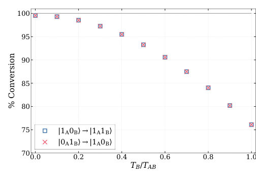
<figcaption class="paper-figure-caption"><b>Fig 4.</b> FIG. 3. Effect of non-zero TB. Percent interconversion between the |10y and |11y upon applying the CNOT gate as a function of TB relative to TAB. Note the quadratic decay of the percent conversion, enabling essentially full interconver- sion for small values of TB.</figcaption>
</figure>
<figure class="paper-figure-card">
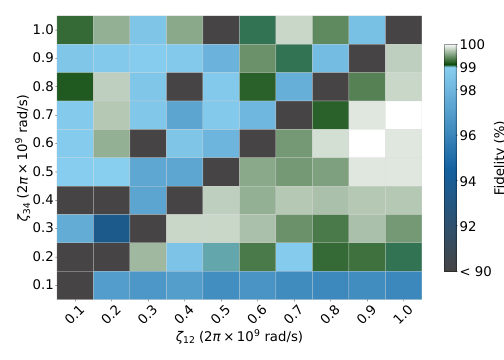
<figcaption class="paper-figure-caption"><b>Fig 5.</b> FIG. 5. Fidelity of the CNOT for different magnetic fields on qubit A, ζpzq 12 and qubit B, ζpzq 34 . The operation is robust to the particular magnetic field strength as long as the magnetic field and the gradient are both non-zero.</figcaption>
</figure>
</div>

<p><strong>Summary.</strong> This paper tackles the challenge of building asymmetric two-qubit gates, such as CNOT, in semiconductor quantum dots. The authors prove that natural interactions are too symmetric for these gates and propose a novel heterogeneous device blueprint. This design breaks the necessary symmetry, enabling high-fidelity, fast CNOT operations purely through electrical control.</p>
<p><strong>Why it may be interesting.</strong> This work directly addresses hardware limitations in solid-state quantum computing by showing how architectural design (heterogeneity) can be used as a resource to overcome fundamental physical symmetries that restrict gate operations.</p>
<details>
<summary>Detailed structure</summary>
<p><strong>Main problem.</strong> The primary challenge is implementing efficient, asymmetric two-qubit gates (like CNOT) in semiconductor quantum dot qubits.</p>
<p><strong>Main result.</strong> The authors propose a heterogeneous double quantum dot blueprint that breaks spin exchange symmetry, enabling a single-pulse, fault-tolerant CNOT gate predicted for isotopically purified silicon within 100 ns.</p>
<p><strong>Method.</strong> They use theoretical analysis based on symmetry constraints to argue that homogeneous architectures fail for asymmetric gates, leading them to design a hardware solution using non-identical qubit encodings.</p>
<p><strong>Model / system.</strong> The system is semiconductor quantum dots, modeled using the Fermi-Hubbard model and mapped to a spin Hamiltonian. The focus is on singlet-triplet qubits within double quantum dot architectures.</p>
<p><strong>Key observables.</strong> CNOT gate fidelity ($>99\%$), gate time ($\sim 100 	ext{ ns}$), and the preservation of coherence in isotopically purified silicon.</p>
<p><strong>Important parameters / regimes.</strong> The key physical parameters involve the exchange coupling ($J_{ij}$) and the ability to break spin-exchange symmetry via heterogeneous device design.</p>
<p><strong>Assumptions / limitations.</strong> It is assumed that single-qubit gates are highly accurate, and the derivation relies on projecting interactions onto a computational subspace while accounting for leakage.</p>
<p><strong>Figures summary.</strong> Not specified in detail; the notes focus on theoretical derivations regarding Hamiltonian symmetry and proposed device blueprints rather than figure descriptions.</p>
<p><strong>Paper structure.</strong> The paper first establishes the necessity of asymmetric gates, then theoretically proves that symmetric interactions prevent these gates in homogeneous systems. It proposes a heterogeneous blueprint to break this symmetry, culminating in numerical simulations predicting high-fidelity gate operation.</p>
</details>
<details>
<summary>Abstract</summary>
<p>Universal quantum computation requires single-qubit control together with at least one entangling two-qubit gate. CNOT and CROT gates are two famous examples of such gates, wherein the state of one qubit (control) dictates the transformation applied to the other (target). By using a simple derivation motivated by symmetry, we show that current device architectures of semiconductor-based quantum dot devices prevent efficient implementation of a CNOT and other asymmetric control-target gates via Heisenberg exchange, Coulomb repulsion, or other interaction that is invariant under spin exchange. Guided by this general principle, we propose a heterogeneous blueprint of double quantum dot devices that enables efficient implementation of the CNOT by breaking the spin exchange symmetry. Crucially, our numerical simulations predict that this novel device blueprint can enable a single-pulse fault-tolerant 100-ns CNOT gate in isotopically purified silicon.</p>
</details>
<p><sub><a href="#top">↑ back to top</a></sub></p>

<p><a id="paper-2608.01916"></a></p>
<h3 id="interspecies-clock-comparison-below-math1078math-uncertainty-with-a-transportable-clock"><a href="http://arxiv.org/abs/2608.01916v1">Interspecies clock comparison below $5 \times 10^{-18}$ uncertainty with a transportable clock</a></h3>
<p><strong>Authors:</strong> Chetan Vishwakarma, Ingo Nosske, Tim Lücke, Martin Steinel, Melina Filzinger, Erik Benkler, Sören Dörscher, Nils Huntemann, Christian Lisdat<br>
<strong>Type:</strong> experiment · <strong>Category:</strong> other · <strong>PDF:</strong> <a href="https://arxiv.org/pdf/2608.01916v1">https://arxiv.org/pdf/2608.01916v1</a><br>
<strong>Analysis basis:</strong> full PDF text, analyzed in chunks
<strong>Topic relevance:</strong> <code>quantum optics experiment</code> <strong>2/5</strong> · <code>QC/QI experiment</code> <strong>1/5</strong> · <code>quantum measurements</code> <strong>1/5</strong></p>
<div class="figure-strip-hint">↔ Scroll figures horizontally</div>
<div class="paper-figures-scroll">
<figure class="paper-figure-card">
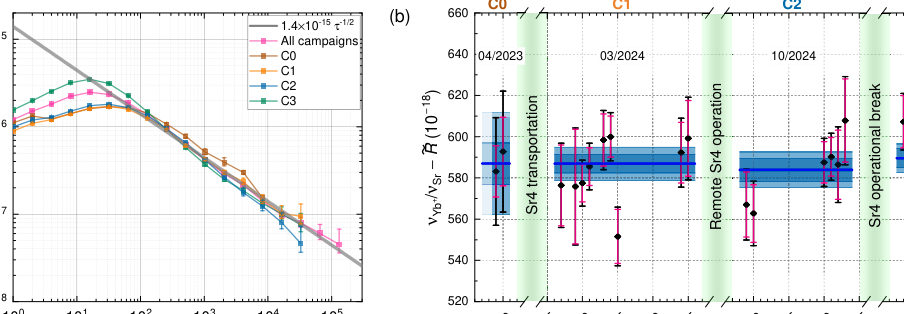
<figcaption class="paper-figure-caption"><b>Fig 1.</b> FIG. 1. Results of the comparisons between the Yb1E3 single-ion clock and the Sr4 transportable optical lattice clock at PTB. (a) Overlapping Allan deviations of the reduced frequency ratio for each campaign (C0 through C3) and for the combined data. The gray solid line indicates the best fit to the combined data at τ ≥256 s. (b) Daily mean frequency ratios relative to eR = 1.495 991 618 544 900. The bottom axis shows the Modified Julian Date (MJD), and main measurement months are indicated at the top. Magenta (black) error bars indicate the statistical (total) uncertainties. The solid blue lines, dark shaded regions, and light shaded regions represent the mean values, statistical...</figcaption>
</figure>
<figure class="paper-figure-card">
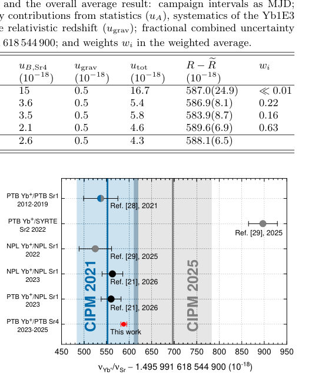
<figcaption class="paper-figure-caption"><b>Fig 2.</b> FIG. 2. Overview of measured values of νYb+/νSr with rel- ative uncertainties below 10−16 [21, 28, 29]. On the vertical axis, measurement years are shown, while the labels next to measurement points indicate reporting years. The blue and gray lines denote the ratios from the 2021 [30] and 2025 [31] CIPM evaluations, respectively; the corresponding shaded bands indicate their associated uncertainties. The color of each data point reported before 2026 indicates the CIPM evaluation to which it contributed. Previous measurements involving the clock PTB-Sr3 are subject to uncontrolled sys- tematic shifts [9, 29] and thus not shown here.</figcaption>
</figure>
</div>

<p><strong>Summary.</strong> The authors report a highly precise comparison of the optical frequencies between an ytterbium single-ion clock and a strontium lattice clock, achieving an uncertainty below $5 	imes 10^{-18}$. This result significantly advances the field by demonstrating the reliable operation of transportable atomic clocks for fundamental physical measurements. It provides crucial data supporting the roadmap for redefining the SI second.</p>
<p><strong>Why it may be interesting.</strong> This work represents state-of-the-art precision measurement in quantum metrology. The ability to compare clocks using transportable standards is critical for extending fundamental physics tests beyond fixed laboratory settings.</p>
<details>
<summary>Detailed structure</summary>
<p><strong>Main problem.</strong> The primary goal is achieving ultra-high accuracy interspecies clock comparisons, particularly involving a transportable clock, to meet requirements for redefining the SI second.</p>
<p><strong>Main result.</strong> The measurement achieved a fractional uncertainty of $4.3 	imes 10^{-18}$ in the frequency ratio $
u_{ ext{Yb}^+}/
u_{ ext{Sr}}$, significantly improving previous records and validating the use of transportable clocks for fundamental measurements.</p>
<p><strong>Method.</strong> The experiment measured the optical frequency ratio between a stationary single-ion clock ($^{171}	ext{Yb}^+$) and a transportable lattice clock ($^{87}	ext{Sr}$) over multiple campaigns, using an ultrastable laser as a common reference.</p>
<p><strong>Model / system.</strong> The system involves comparing the electric-octupole (E3) transition of $^{171}	ext{Yb}^+$ with the $^1	ext{S}_0$--${^3	ext{P}_0}$ transition of $^{87}	ext{Sr}$. The methodology requires precise control over clock laser frequencies and accounting for environmental effects like relativistic redshift.</p>
<p><strong>Key observables.</strong> The measured optical frequency ratio, $
u_{ ext{Yb}^+}/
u_{ ext{Sr}} = 1.495\,991\,618\,544\,900\,588\,1(65)$.</p>
<p><strong>Important parameters / regimes.</strong> Fractional uncertainty of $4.3 	imes 10^{-18}$; the comparison spans nearly two years across four separate campaigns.</p>
<p><strong>Assumptions / limitations.</strong> The analysis assumes that systematic errors, such as those related to lattice light shifts or gravitational potential variations, can be accurately modeled and corrected for.</p>
<p><strong>Figures summary.</strong> Figure 1 shows overlapping Allan deviations of the reduced frequency ratio over multiple campaigns (C0-C3), demonstrating stability. Table I summarizes the results from these four distinct measurement campaigns.</p>
<p><strong>Paper structure.</strong> The paper details the experimental setup comparing two different atomic species' optical transitions, presents data collected across multiple time periods/campaigns, analyzes the resulting frequency ratios to determine a weighted average value, and discusses the implications for SI second redefinition.</p>
</details>
<details>
<summary>Abstract</summary>
<p>We report a measurement of the optical frequency ratio between the $^2\mathrm{S}_{1/2}(F=0)$--${^2\mathrm{F}_{7/2}(F=3)}$ electric-octupole (E3) transition of $^{171}$Yb$^{+}$ and the $^1\mathrm{S}_0$--${^3\mathrm{P}_0}$ transition of $^{87}$Sr, $ν_{\mathrm{Yb}^{+}}/ν_\mathrm{Sr} = 1.495\,991\,618\,544\,900\,588\,1(65)$. Reaching a fractional uncertainty of $4.3 \times 10^{-18}$, this result improves upon the previous best by more than a factor of three and is among the few that meet the requirements for interspecies clock comparisons specified by the roadmap towards the redefinition of the SI second. The comparison is between a transportable optical lattice clock and a stationary single-ion clock. It spans a period of nearly two years, during which the transportable clock was intermittently operated off-campus. The ratio was reproducibly measured during four separate campaigns, which are consistent within their statistical uncertainties. The results demonstrate reproducible $10^{-18}$ level operation of the transportable clock and thus validate its application for chronometric geodesy and as a transfer standard for inter-institute clock comparisons, e.g., in the absence of optical fiber links.</p>
</details>
<p><sub><a href="#top">↑ back to top</a></sub></p>

<p><a id="paper-2608.01088"></a></p>
<h3 id="twenty-one-characterizations-of-reversible-quantum-channels"><a href="http://arxiv.org/abs/2608.01088v1">Twenty-one characterizations of reversible quantum channels</a></h3>
<p><strong>Authors:</strong> Nan Li, Yuan Li, Hanyu Yang, Shunlong Luo<br>
<strong>Type:</strong> theory · <strong>Category:</strong> quantum information and computing · <strong>PDF:</strong> <a href="https://arxiv.org/pdf/2608.01088v1">https://arxiv.org/pdf/2608.01088v1</a><br>
<strong>Analysis basis:</strong> full PDF text, analyzed in chunks
<strong>Topic relevance:</strong> <code>entanglement &amp; information structure</code> <strong>2/5</strong> · <code>correlated / nonlocal dissipation</code> <strong>1/5</strong> · <code>non-equilibrium dynamics</code> <strong>1/5</strong></p>
<div class="figure-strip-hint">↔ Scroll figures horizontally</div>
<div class="paper-figures-scroll">
<figure class="paper-figure-card">
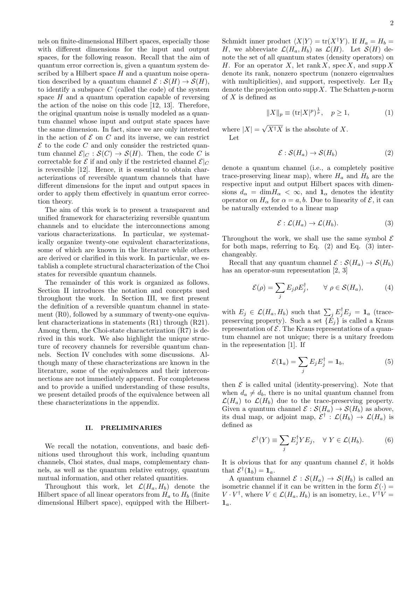
<figcaption class="paper-figure-caption"><b>Fig 1.</b> Low-resolution page preview, page 2</figcaption>
</figure>
<figure class="paper-figure-card">
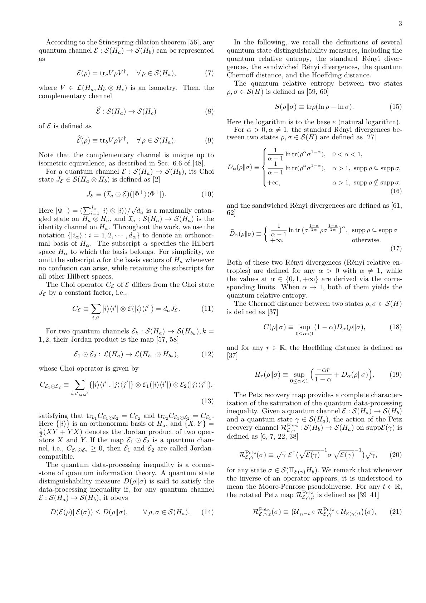
<figcaption class="paper-figure-caption"><b>Fig 2.</b> Low-resolution page preview, page 3</figcaption>
</figure>
<figure class="paper-figure-card">
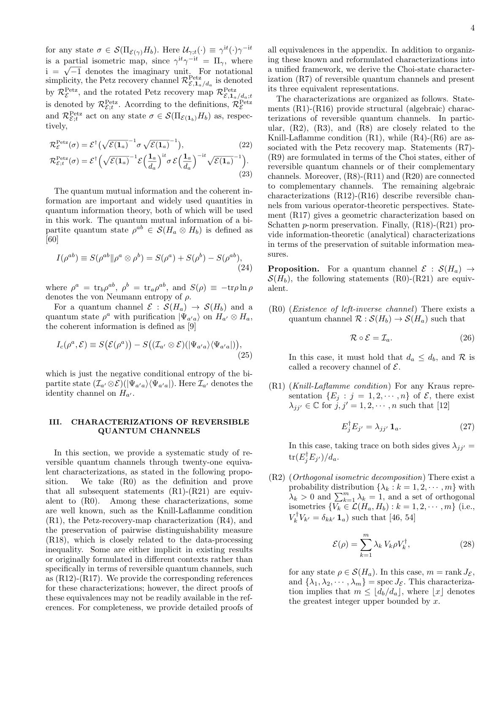
<figcaption class="paper-figure-caption"><b>Fig 3.</b> Low-resolution page preview, page 4</figcaption>
</figure>
<figure class="paper-figure-card">
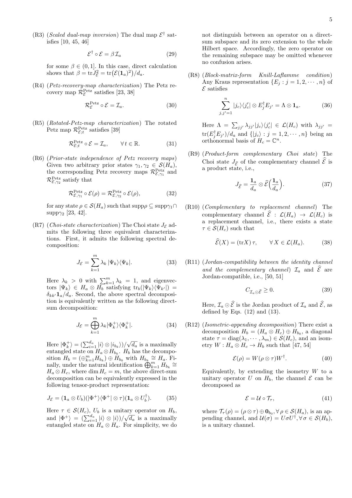
<figcaption class="paper-figure-caption"><b>Fig 4.</b> Low-resolution page preview, page 5</figcaption>
</figure>
<figure class="paper-figure-card">
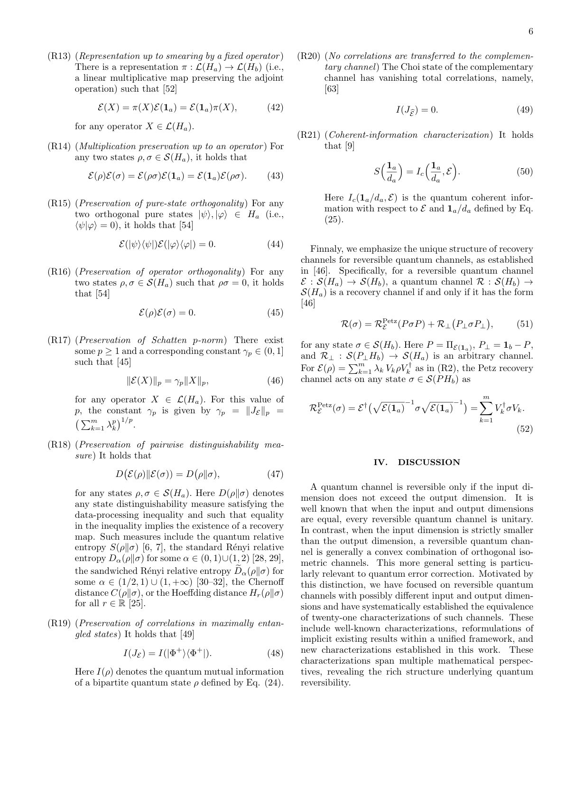
<figcaption class="paper-figure-caption"><b>Fig 5.</b> Low-resolution page preview, page 6</figcaption>
</figure>
</div>

<p><strong>Summary.</strong> This paper rigorously characterizes reversible quantum channels by presenting twenty-one equivalent mathematical conditions derived from algebraic, geometric, and information-theoretic viewpoints. It proves key structural results concerning the Choi state of these channels, offering a unified framework for understanding reversibility in quantum information processing.</p>
<p><strong>Why it may be interesting.</strong> This work provides a deep structural understanding of quantum operations that are perfectly reversible, which is crucial for designing fault-tolerant quantum computation protocols and analyzing fundamental limits in quantum communication.</p>
<details>
<summary>Detailed structure</summary>
<p><strong>Main problem.</strong> The central problem is providing a comprehensive characterization of reversible quantum channels acting on finite-dimensional Hilbert spaces.</p>
<p><strong>Main result.</strong> The authors establish twenty-one equivalent mathematical conditions characterizing reversibility, including deriving three equivalent forms for the Choi state of such channels.</p>
<p><strong>Method.</strong> The work employs rigorous theoretical proofs by relating algebraic properties (e.g., dual map inversion, Jordan products) to information-theoretic measures (e.g., distinguishability, mutual information).</p>
<p><strong>Model / system.</strong> The system under study is a general quantum channel $E: S(\mathcal{H}_a) 	o S(\mathcal{H}_b)$, which is a completely positive trace-preserving linear map acting on the state space of finite-dimensional Hilbert spaces.</p>
<p><strong>Key observables.</strong> Choi state ($\mathcal{J}_E$), Quantum Mutual Information, various distinguishability measures (relative entropy, R\'enyi divergences), and the existence of left/right inverse channels.</p>
<p><strong>Important parameters / regimes.</strong> The dimensions of the input and output Hilbert spaces ($d_a$ and $d_b$) are key parameters defining the channel structure.</p>
<p><strong>Assumptions / limitations.</strong> The analysis relies on established theorems regarding isometric maps, Stinespring dilation, and properties related to recovery channels (Petz's theory).</p>
<p><strong>Paper structure.</strong> The paper systematically presents twenty-one equivalent characterizations ($   ext{R}0$ through $  ext{R}21$) for reversibility, building upon foundational definitions and proving equivalences between these conditions.</p>
</details>
<details>
<summary>Abstract</summary>
<p>Reversible quantum channels play a fundamental role in quantum dynamics and quantum information processing. A quantum channel is reversible if there exists another quantum channel acting as its left inverse. Due to their intrinsic significance and wide applications, it is desirable to characterize reversible quantum channels from diverse perspectives. In this work, we study reversible quantum channels on finite-dimensional Hilbert spaces, with particular emphasis on the case of different input and output dimensions. We systematically present twenty-one equivalent characterizations of reversible quantum channels from algebraic, geometrical, and information-theoretical perspectives. Among these characterizations, some are well known, while others, implicit in the literature or formulated in other contexts, are clarified here; the Choi-state characterization is derived in this work. Specifically, we prove that the Choi states of reversible quantum channels admit three equivalent forms: the spectral, direct-sum, and tensor-product representations. These twenty-one equivalent characterizations establish a comprehensive framework for reversible quantum channels, provide diverse insights into the structural and information-theoretic properties of quantum channels, and facilitate applications of reversibility in quantum information processing such as quantum error correction, quantum teleportation, and quantum thermodynamics.</p>
</details>
<p><sub><a href="#top">↑ back to top</a></sub></p>

<p><a id="paper-2608.02594"></a></p>
<h3 id="an-argmax-principle-for-sum-of-squares-relaxations-on-the-sphere"><a href="http://arxiv.org/abs/2608.02594v1">An Argmax Principle for Sum-of-Squares Relaxations on the Sphere</a></h3>
<p><strong>Authors:</strong> Fernando Jeronimo Granha, Pei Wu, Haochen Xu<br>
<strong>Type:</strong> theory · <strong>Category:</strong> quantum information and computing · <strong>PDF:</strong> <a href="https://arxiv.org/pdf/2608.02594v1">https://arxiv.org/pdf/2608.02594v1</a><br>
<strong>Analysis basis:</strong> full PDF text, analyzed in chunks
<strong>Topic relevance:</strong> <code>entanglement &amp; information structure</code> <strong>2/5</strong> · <code>Keldysh / 2PI / non-Gaussian methods</code> <strong>1/5</strong></p>
<div class="figure-strip-hint">↔ Scroll figures horizontally</div>
<div class="paper-figures-scroll">
<figure class="paper-figure-card">
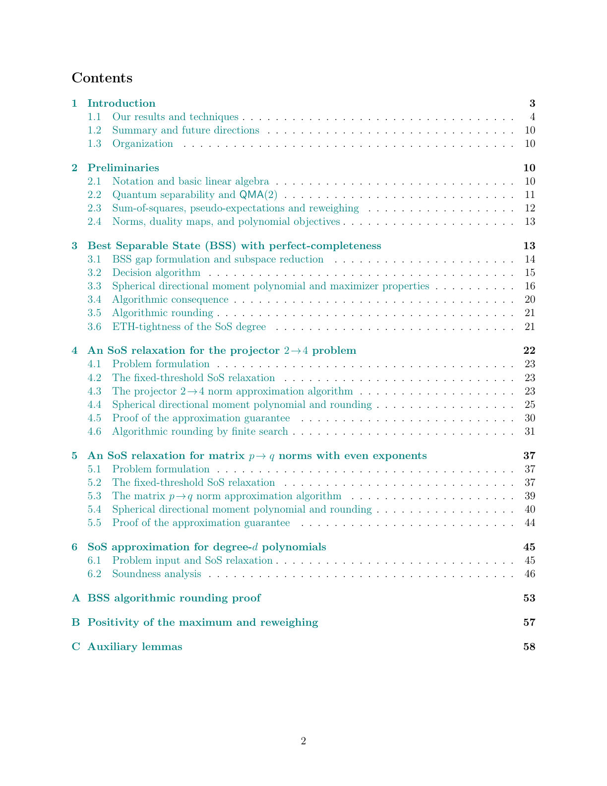
<figcaption class="paper-figure-caption"><b>Fig 1.</b> Low-resolution page preview, page 2</figcaption>
</figure>
<figure class="paper-figure-card">
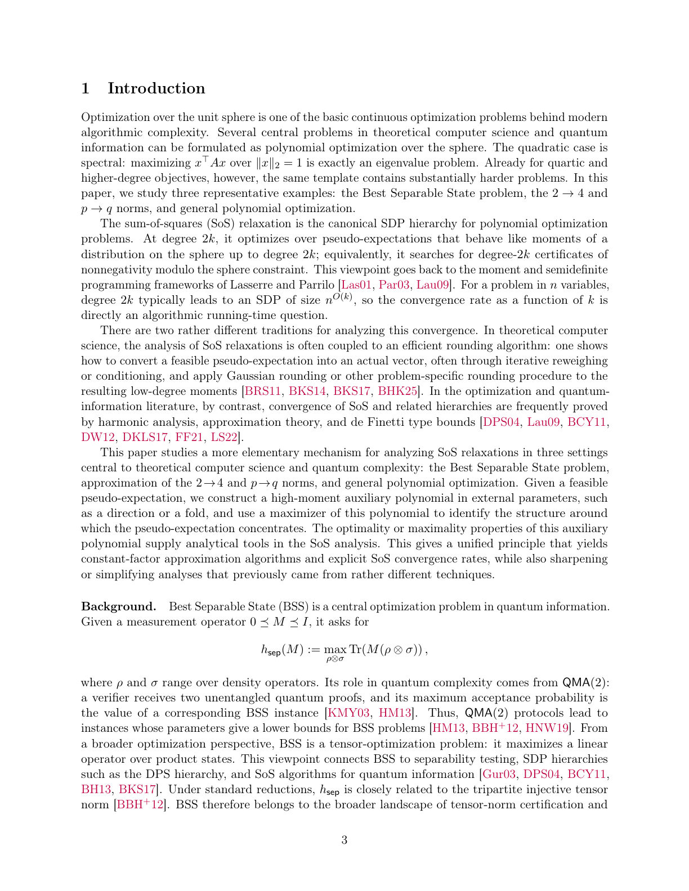
<figcaption class="paper-figure-caption"><b>Fig 2.</b> Low-resolution page preview, page 3</figcaption>
</figure>
<figure class="paper-figure-card">
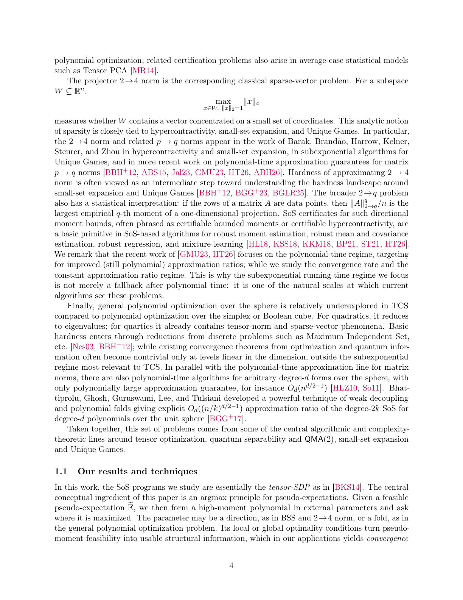
<figcaption class="paper-figure-caption"><b>Fig 3.</b> Low-resolution page preview, page 4</figcaption>
</figure>
<figure class="paper-figure-card">
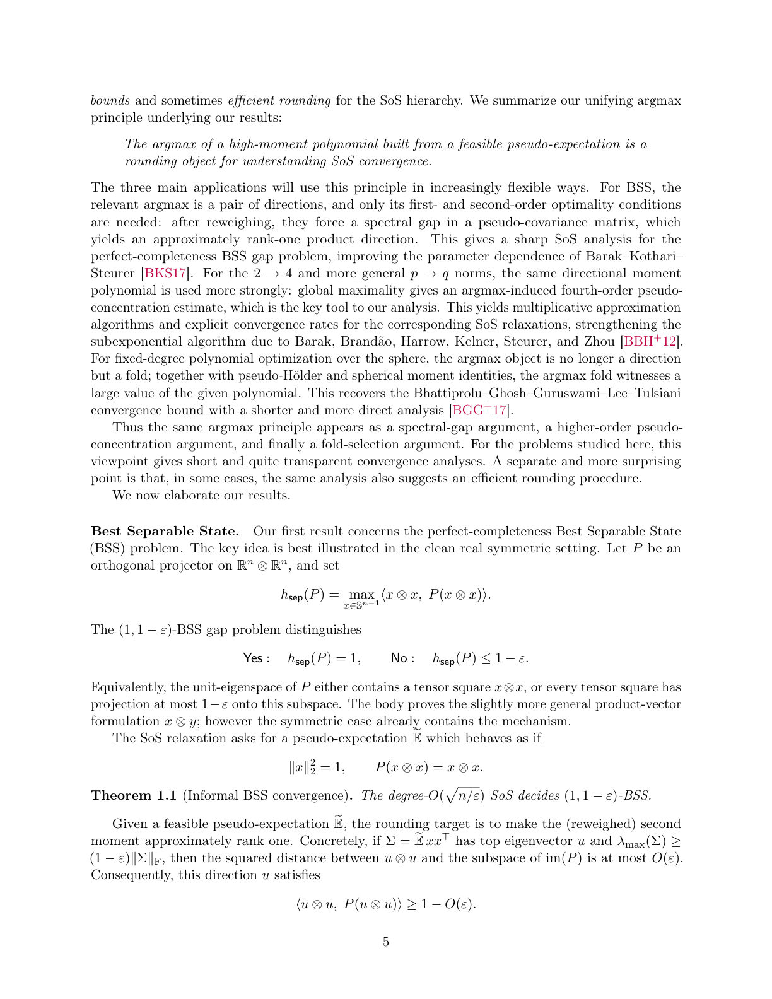
<figcaption class="paper-figure-caption"><b>Fig 4.</b> Low-resolution page preview, page 5</figcaption>
</figure>
<figure class="paper-figure-card">
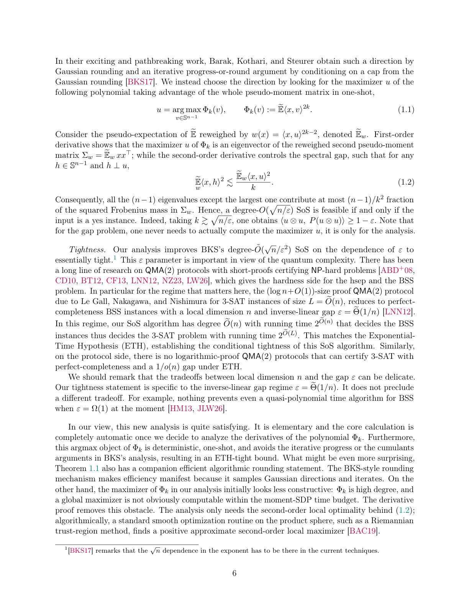
<figcaption class="paper-figure-caption"><b>Fig 5.</b> Low-resolution page preview, page 6</figcaption>
</figure>
</div>

<p><strong>Summary.</strong> This paper introduces an 'argmax principle' that uses the maximizer of high-moment polynomials to analyze Sum-of-Squares (SoS) relaxations on the unit sphere. It unifies disparate convergence analyses, providing improved bounds for tasks like determining quantum separability and approximating matrix norms. This methodological advance is significant because it offers a common mathematical lens through which multiple complex problems in quantum information can be viewed.</p>
<p><strong>Why it may be interesting.</strong> The unification of analysis techniques across quantum separability, norm approximation, and general moment problems via a single principle is highly valuable for theoretical quantum information scientists.</p>
<details>
<summary>Detailed structure</summary>
<p><strong>Main problem.</strong> Developing a unified 'argmax principle' to analyze Sum-of-Squares (SoS) relaxations for optimization problems defined over the unit sphere.</p>
<p><strong>Main result.</strong> The argmax of high-moment pseudo-polynomials provides a common, unifying framework that yields sharper convergence bounds and simpler proofs across various quantum information tasks.</p>
<p><strong>Method.</strong> The core method involves constructing an auxiliary polynomial based on high-order pseudo-moments ($\Phi_k$) and analyzing its global maximizer to derive necessary conditions for SoS convergence.</p>
<p><strong>Model / system.</strong> The analysis applies to optimization problems over the unit sphere, specifically addressing the Best Separable State (BSS) problem in quantum information theory and approximating various matrix norms ($p 	o q$).</p>
<p><strong>Key observables.</strong> Pseudo-expectations ($ ext{eE}$), high-order pseudo-moments ($\Phi_k$), approximation ratios for separability measures, and distance bounds between matrices.</p>
<p><strong>Important parameters / regimes.</strong> The analysis is sensitive to the gap structure (e.g., inverse-linear gap $\epsilon = \Theta(1/n)$) and the required polynomial degree $k$ relative to system size $n$.</p>
<p><strong>Assumptions / limitations.</strong> The framework assumes that analyzing the maximizer of the high-moment polynomial is sufficient to characterize the convergence properties of the underlying SoS relaxation.</p>
<p><strong>Figures summary.</strong> Not specified in the notes, but the analysis involves bounding distances ($    ext{dist}_F$) between matrices derived from optimization variables $(u, v)$ and a target matrix $W$.</p>
<p><strong>Paper structure.</strong> The paper introduces the argmax principle by applying it to three distinct problems: BSS (Theorem 1.1), Matrix Norms (Theorem 1.2), and general polynomial optimization convergence (recovering Bhattiprolu et al.'s result). The latter sections detail the rigorous mathematical machinery using Riemannian trust-region methods.</p>
</details>
<details>
<summary>Abstract</summary>
<p>We develop an argmax principle for analyzing sum-of-squares relaxations of optimization problems over the unit sphere. Given a feasible pseudo-expectation, we form a polynomial of high-order pseudo-moments, such as $Φ_k(u)=\widetilde{\mathbb E}\langle x,u\rangle^{2k}$. Our guiding principle is that its maximizers are rounding candidates: their local and global optimality conditions reveal the reweighed pseudo-expectation inequalities governing SoS convergence. This viewpoint unifies several problems previously analyzed by rather different techniques.   We obtain three results. First, for Best Separable State, we give a degree-$O(\sqrt{n/ε})$ SoS analysis for approximating $h_{\mathrm{sep}}(P)$ in the perfect-completeness regime, improving and simplifying Barak, Kothari and Steurer (STOC'17). The dependence is essentially tight for inverse-linear gap under the Exponential-Time Hypothesis, matching hardness from $\mathrm{QMA}(2)$ protocols. Second, for the matrix $2\to4$ norm, degree-$O(\sqrt n/ε)$ SoS gives a multiplicative $(1+ε)$ approximation. Barak et al. (STOC'12) previously gave a comparable-time constant-gap decision algorithm; our result gives a multiplicative guarantee and extends to a family of $p\to q$ norms with even $q$. Finally, for degree-$d$ polynomial optimization, we recover the convergence theorem of Bhattiprolu et al. (FOCS'17) with a shorter, more direct proof: degree-$k$ SoS gives approximation ratio $O_d((n/k)^{d/2-1})$.   The paper introduces no new relaxation. Instead, the high-moment argmax gives a common way to read an SoS solution, unifying previously separate convergence analyses and yielding sharper bounds or simpler proofs.</p>
</details>
<p><sub><a href="#top">↑ back to top</a></sub></p>

<p><a id="paper-2608.00930"></a></p>
<h3 id="parallel-repetition-in-the-two-player-quantum-cloning-game"><a href="http://arxiv.org/abs/2608.00930v1">Parallel Repetition in the Two-Player Quantum Cloning Game</a></h3>
<p><strong>Authors:</strong> Eli Coe Naig, Stephen A. Fenner<br>
<strong>Type:</strong> theory · <strong>Category:</strong> quantum information and computing · <strong>PDF:</strong> <a href="https://arxiv.org/pdf/2608.00930v1">https://arxiv.org/pdf/2608.00930v1</a><br>
<strong>Analysis basis:</strong> full PDF text, analyzed in chunks
<strong>Topic relevance:</strong> <code>entanglement &amp; information structure</code> <strong>2/5</strong> · <code>quantum measurements</code> <strong>1/5</strong></p>
<div class="figure-strip-hint">↔ Scroll figures horizontally</div>
<div class="paper-figures-scroll">
<figure class="paper-figure-card">
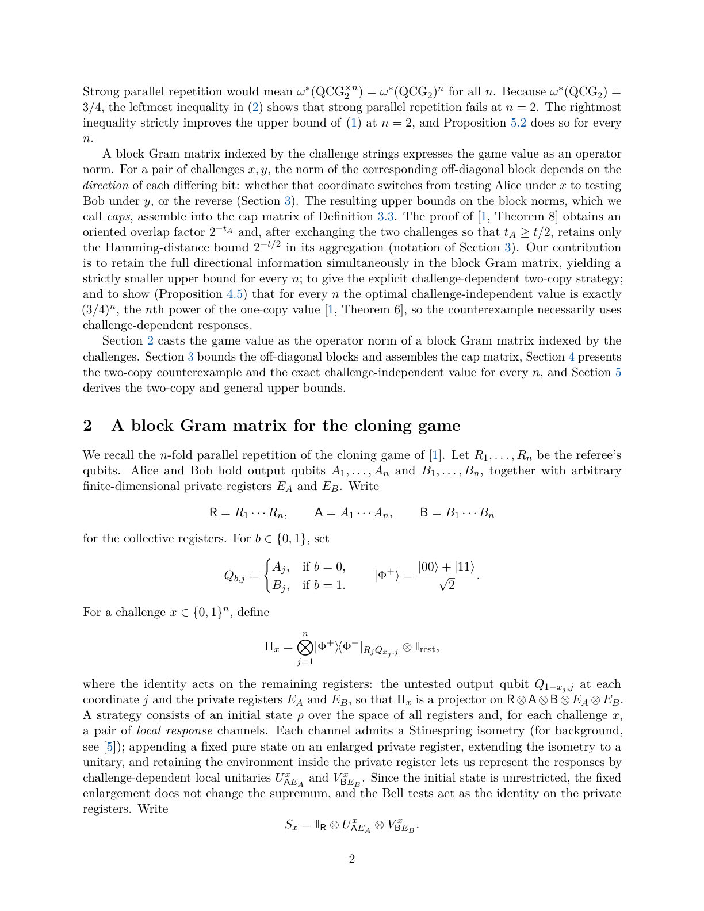
<figcaption class="paper-figure-caption"><b>Fig 1.</b> Low-resolution page preview, page 2</figcaption>
</figure>
<figure class="paper-figure-card">
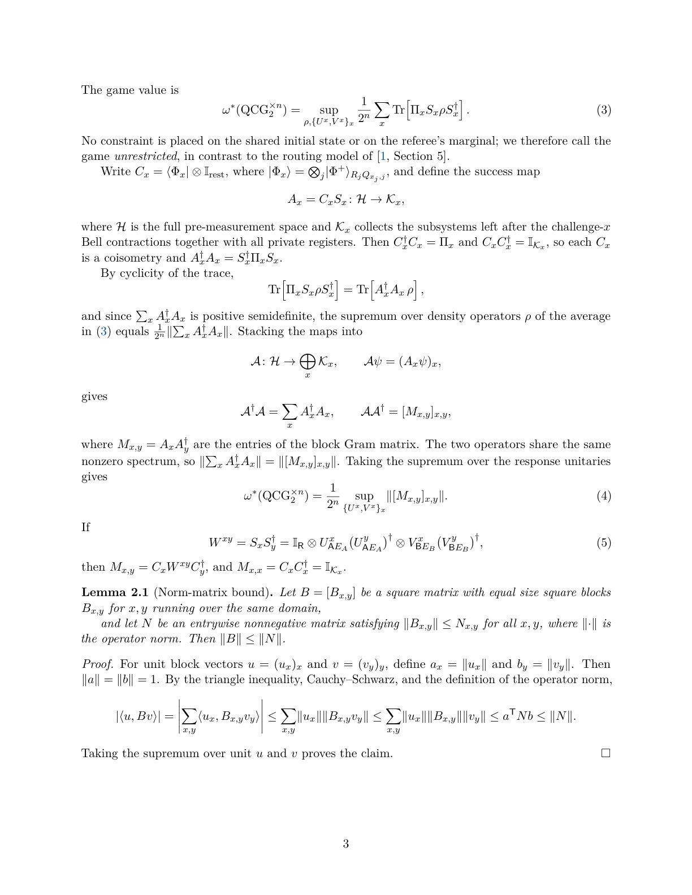
<figcaption class="paper-figure-caption"><b>Fig 2.</b> Low-resolution page preview, page 3</figcaption>
</figure>
<figure class="paper-figure-card">
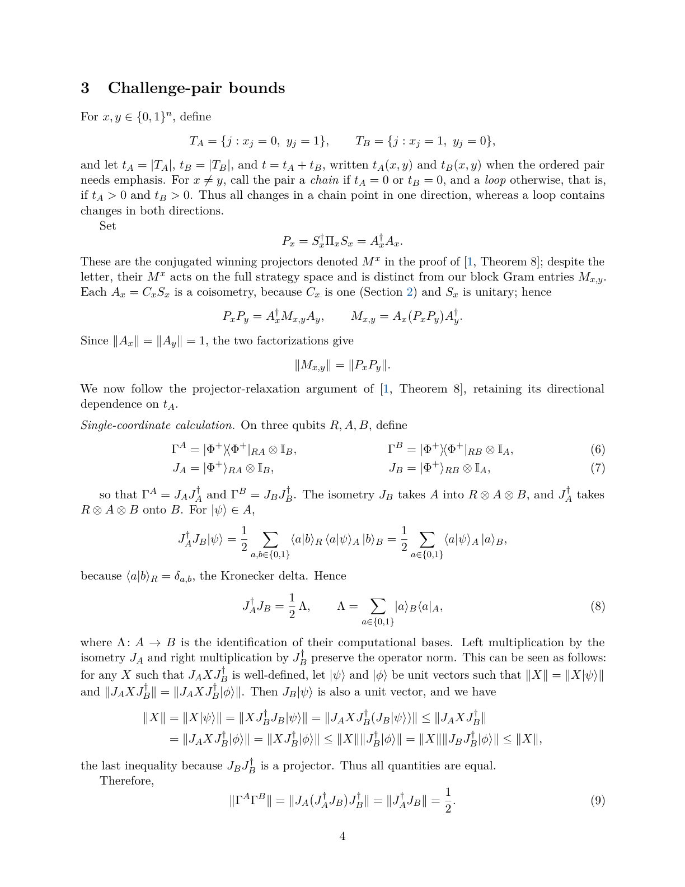
<figcaption class="paper-figure-caption"><b>Fig 3.</b> Low-resolution page preview, page 4</figcaption>
</figure>
<figure class="paper-figure-card">
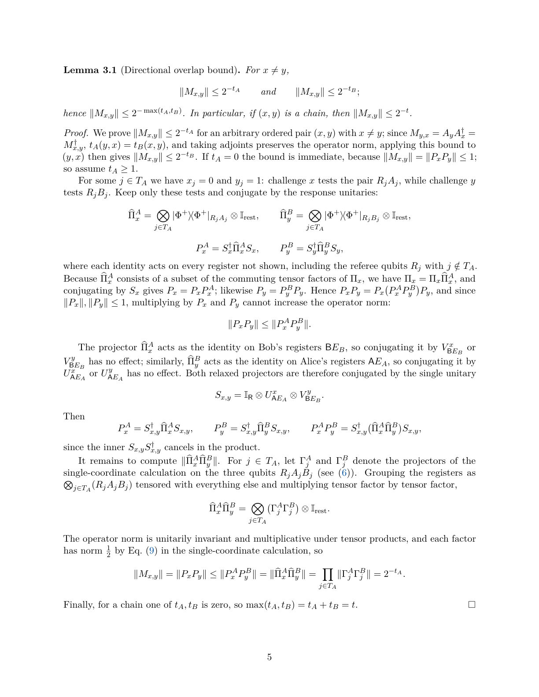
<figcaption class="paper-figure-caption"><b>Fig 4.</b> Low-resolution page preview, page 5</figcaption>
</figure>
<figure class="paper-figure-card">

<figcaption class="paper-figure-caption"><b>Fig 5.</b> Low-resolution page preview, page 6</figcaption>
</figure>
</div>

<p><strong>Summary.</strong> The paper analyzes the two-player quantum cloning game to study the concept of strong parallel repetition. It proves that this property fails because optimal strategies can depend on the challenge, leading to a value higher than what is achievable with fixed (challenge-independent) responses. The authors establish new, tighter upper bounds for the game's value.</p>
<p><strong>Why it may be interesting.</strong> This work directly addresses fundamental limits on quantum information tasks like cloning and verification, which are central topics in quantum cryptography and quantum computation theory. The techniques used for bounding matrix norms are highly relevant to understanding resource constraints in QI protocols.</p>
<details>
<summary>Detailed structure</summary>
<p><strong>Main problem.</strong> The paper investigates the failure of strong parallel repetition within the context of the two-player quantum cloning game (QCG). It aims to establish tight bounds on the game's value for multiple copies.</p>
<p><strong>Main result.</strong> Strong parallel repetition fails for the unrestricted QCG, as challenge-dependent strategies yield values exceeding those achievable by challenge-independent protocols. A new upper bound is derived that strictly improves previous estimates.</p>
<p><strong>Method.</strong> The analysis uses techniques involving block Gram matrices and directional overlap bounds to constrain the game's value. It compares results from challenge-dependent versus challenge-independent strategies.</p>
<p><strong>Model / system.</strong> The model is the two-player quantum cloning game ($ ext{QCG}    imes n/2$), which involves local unitaries applied by two noncommunicating players based on a randomly sampled challenge string $x$.</p>
<p><strong>Key observables.</strong> The primary observable is the game value $\omega^*(	ext{QCG} 	imes n/2)$, defined as the supremum of an expectation involving projectors and response unitaries.</p>
<p><strong>Important parameters / regimes.</strong> The number of copies, $n$, is a key parameter. The bounds are compared against $(3/4)^n$ (challenge-independent) and $\cos^{2n}(\pi/8)$ (previous upper bound).</p>
<p><strong>Assumptions / limitations.</strong> The analysis contrasts with previous bounds, showing that neither the lower bound $((3/4)^n)$ nor the upper bound ($\cos^{2n}(\pi/8)$) is tight for $n=2$. The exact two-copy value remains an open question.</p>
<p><strong>Paper structure.</strong> The paper progresses by reformulating the game value using a block Gram matrix, deriving bounds through projector relaxation arguments, demonstrating the failure of strong parallel repetition via explicit strategies, and finally establishing tighter upper bounds using directional overlap analysis.</p>
</details>
<details>
<summary>Abstract</summary>
<p>We study parallel repetition in the two-player quantum cloning game, a monogamy-of-entanglement game motivated by quantum position verification. Colisson Palais, Escolà-Farràs, and Speelman bounded the value of $n$ copies between $(3/4)^n$ and $\cos^{2n}(π/8)$. For two copies, we prove that neither bound is tight. An explicit challenge-dependent strategy achieves value $(5+\sqrt{17})/16>9/16$, so strong parallel repetition fails for the unrestricted game. A block Gram matrix argument gives the upper bound $(11+\sqrt{65})/32<\cos^4(π/8)$ and strictly improves the previous parallel-repetition upper bound for every $n$. For every $n$, challenge-independent strategies have optimal value $(3/4)^n$.</p>
</details>
<p><sub><a href="#top">↑ back to top</a></sub></p>

<p><a id="paper-2608.00751"></a></p>
<h3 id="generalized-marginals-of-tie-wigner-distribution-nand-lagrangian-tomography"><a href="http://arxiv.org/abs/2608.00751v1">Generalized Marginals of tie -Wigner Distribution nand Lagrangian Tomography</a></h3>
<p><strong>Authors:</strong> Maurice de Gosson<br>
<strong>Type:</strong> theory · <strong>Category:</strong> other · <strong>PDF:</strong> <a href="https://arxiv.org/pdf/2608.00751v1">https://arxiv.org/pdf/2608.00751v1</a><br>
<strong>Analysis basis:</strong> full PDF text, analyzed in chunks
<strong>Topic relevance:</strong> <code>quantum measurements</code> <strong>2/5</strong></p>
<div class="figure-strip-hint">↔ Scroll figures horizontally</div>
<div class="paper-figures-scroll">
<figure class="paper-figure-card">

<figcaption class="paper-figure-caption"><b>Fig 1.</b> Low-resolution page preview, page 2</figcaption>
</figure>
<figure class="paper-figure-card">

<figcaption class="paper-figure-caption"><b>Fig 2.</b> Low-resolution page preview, page 3</figcaption>
</figure>
<figure class="paper-figure-card">

<figcaption class="paper-figure-caption"><b>Fig 3.</b> Low-resolution page preview, page 4</figcaption>
</figure>
<figure class="paper-figure-card">

<figcaption class="paper-figure-caption"><b>Fig 4.</b> Low-resolution page preview, page 5</figcaption>
</figure>
<figure class="paper-figure-card">

<figcaption class="paper-figure-caption"><b>Fig 5.</b> Low-resolution page preview, page 6</figcaption>
</figure>
</div>

<p><strong>Summary.</strong> This paper introduces a generalized Lagrangian Radon transform based on symplectic geometry to extend the concept of marginal measurements in quantum mechanics. It shows that by measuring projections (tomograms) along arbitrary Lagrangian subspaces, one can uniquely reconstruct the full quantum state's Wigner function or density operator. This provides a powerful mathematical tool for understanding phase-space tomography.</p>
<p><strong>Why it may be interesting.</strong> This work provides a deep mathematical underpinning for quantum state tomography, connecting fundamental concepts like Wigner functions and phase space measurements through rigorous geometric methods applicable to open quantum systems theory.</p>
<details>
<summary>Detailed structure</summary>
<p><strong>Main problem.</strong> The paper develops a symplectic formulation for the Lagrangian Radon transform to generalize the marginals of the Wigner distribution, providing a unified quantum tomography framework.</p>
<p><strong>Main result.</strong> It establishes that generalized marginal measurements along arbitrary Lagrangian subspaces are sufficient to reconstruct the full density operator or Gaussian state in phase space.</p>
<p><strong>Method.</strong> The approach uses advanced harmonic analysis on the symplectic group $Sp(n)$ acting on the Lagrangian Grassmannian $   ext{Lag}(n)$, generalizing classical Radon transforms.</p>
<p><strong>Model / system.</strong> The theory applies to quantum states described by density operators ($
ho$) and their Wigner representations ($W\psi$), operating in phase space $\mathbb{R}^{2n}$.</p>
<p><strong>Key observables.</strong> Generalized Lagrangian tomograms, the Wigner function $W\psi$, and the covariance matrix $\Sigma$.</p>
<p><strong>Important parameters / regimes.</strong> The symplectic group structure, the dimension $n$ (related to degrees of freedom), and Planck's constant ($\hbar$).</p>
<p><strong>Assumptions / limitations.</strong> The framework assumes sufficient smoothness conditions on the density operator for the Radon transform definitions to hold.</p>
<p><strong>Paper structure.</strong> The paper builds from defining the symplectic geometry of the Lagrangian Radon transform, applying it first to Gaussian states (reconstruction formulas), and finally extending the concept to reconstruct general density operators via cross-Wigner distributions.</p>
</details>
<details>
<summary>Abstract</summary>
<p>We develop a symplectic formulation of the Lagrangian Radon transform based on the transitive action of the symplectic group on the Lagrangian Grassmannian. This geometric framework naturally extends the classical notion of the marginals of the Wigner transform, viewed as elementary tomograms, to arbitrary Lagrangian subspaces. The resulting generalized tomography provides a unified treatment of position and momentum measurements related by symplectic rotations. As applications, we revisit the Pauli reconstruction problem and establish reconstruction formulas for density operators from generalized Lagrangian tomograms.</p>
</details>
<p><sub><a href="#top">↑ back to top</a></sub></p>

<p><a id="paper-2608.01853"></a></p>
<h3 id="local-network-growth-how-simple-rules-drive-network-complexity"><a href="http://arxiv.org/abs/2608.01853v1">Local network growth: How simple rules drive network complexity</a></h3>
<p><strong>Authors:</strong> Alexei Vazquez<br>
<strong>Type:</strong> theory · <strong>Category:</strong> disordered systems and neural networks · <strong>PDF:</strong> <a href="https://arxiv.org/pdf/2608.01853v1">https://arxiv.org/pdf/2608.01853v1</a><br>
<strong>Analysis basis:</strong> full PDF text, analyzed in chunks
<strong>Topic relevance:</strong> <code>analog quantum simulation</code> <strong>1/5</strong> · <code>correlated / nonlocal dissipation</code> <strong>1/5</strong> · <code>driven-dissipative phase transition</code> <strong>1/5</strong> · <code>entanglement &amp; information structure</code> <strong>1/5</strong> · <code>methods for driven-dissipative</code> <strong>1/5</strong> · <code>non-equilibrium dynamics</code> <strong>1/5</strong> · <code>non-equilibrium universality</code> <strong>1/5</strong></p>
<div class="figure-strip-hint">↔ Scroll figures horizontally</div>
<div class="paper-figures-scroll">
<figure class="paper-figure-card">

<figcaption class="paper-figure-caption"><b>Fig 1.</b> Figure 1.1: Degree. A node’s degree is simply its number of links. Drawn here with node size growing with degree: a few hubs (such as the central one, k = 7) carry many links, while most nodes have only one or two. That imbalance — many small nodes, a few giant hubs — is the hallmark of a scale-free network.</figcaption>
</figure>
<figure class="paper-figure-card">

<figcaption class="paper-figure-caption"><b>Fig 2.</b> Figure 1.2: Clustering coefficient. The clustering of the central node (gray) is the fraction of its neighbor pairs that are themselves linked. (a) Four of the six neighbor pairs are linked (the bold links), so c ≈0.67 — a cliquish neighborhood. (b) No neighbors are linked to each other, so c = 0.</figcaption>
</figure>
<figure class="paper-figure-card">

<figcaption class="paper-figure-caption"><b>Fig 3.</b> Figure 1.3: Distance. The distance between two nodes is the number of links on the shortest route between them. The shortest route from A to B here is three hops (in bold); the lower route is longer. In real networks these shortest distances stay small even as the network grows — the small-world effect.</figcaption>
</figure>
<figure class="paper-figure-card">

<figcaption class="paper-figure-caption"><b>Fig 4.</b> Figure 1.4: Degree correlations. (a) In an assortative network, hubs tend to link to other hubs (“birds of a feather”). (b) In a disassortative one, hubs avoid each other and link instead to low- degree nodes (“opposites attract”). Social networks lean assortative; technological and biological ones, disassortative.</figcaption>
</figure>
<figure class="paper-figure-card">

<figcaption class="paper-figure-caption"><b>Fig 5.</b> Figure 1.6: Why the standard clustering coefficient misleads. The hub’s neighbors all have degree two, and each spends its spare link on another neighbor of the hub. They are therefore as intercon- nected as their degrees allow — no rewiring could add a single link among them. Yet the standard coefficient, Eq. (1.2), divides by all 8 2  = 28 neighbor pairs and reports c = 4/28 ≈0.14, falling to zero as the hub grows. The pairs it counts are pairs the degrees forbid.</figcaption>
</figure>
</div>

<p><strong>Summary.</strong> This work argues that the complex structure of real networks—from social media to the web—does not require a global organizing principle. Instead, these intricate patterns emerge naturally and robustly from simple, localized rules governing how new connections are formed one node at a time.</p>
<p><strong>Why it may be interesting.</strong> While not quantum in nature, the principles of emergent complexity from local interactions resonate with concepts in many-body physics, such as how collective behavior arises from individual particle Hamiltonians or local field interactions.</p>
<details>
<summary>Detailed structure</summary>
<p><strong>Main problem.</strong> The paper addresses how complex, global statistical regularities found in real-world networks (like the Internet or social graphs) emerge from simple, purely local growth rules rather than requiring a global mechanism like preferential attachment.</p>
<p><strong>Main result.</strong> Global network patterns—such as scale-free degree distributions and high clustering—are shown to be emergent consequences of microscopic decisions made only by newly connected nodes interacting with their immediate neighbors.</p>
<p><strong>Method.</strong> The methodology involves identifying and testing specific local growth rules (e.g., search, triadic closure) against macroscopic network diagnostics using mean-field arguments and comparative analysis with deterministic models.</p>
<p><strong>Model / system.</strong> The study applies to a wide variety of complex networks, including the Internet graph, social ties, protein interaction maps, and project dependency graphs. The focus is on the abstract mathematical structure of connectivity rather than a specific physical Hamiltonian.</p>
<p><strong>Key observables.</strong> Degree distribution ($p(k) \sim k^{-\gamma}$), small-world properties (short paths, high clustering), community structure scaling ($\sqrt{n}$ vs $neta$), and local correlations between neighboring node degrees.</p>
<p><strong>Important parameters / regimes.</strong> The growth rule itself is the key parameter; variations in this local decision process determine the resulting global exponents and structural metrics.</p>
<p><strong>Assumptions / limitations.</strong> The central assumption is that locality dictates globality, meaning complex structure arises from simple, non-global interactions. Early analyses must carefully distinguish between measurement artifacts and true emergent properties.</p>
<p><strong>Figures summary.</strong> Not specified; the notes describe conceptual figures illustrating degree counting and structural comparisons (e.g., ring lattice vs. real networks).</p>
<p><strong>Paper structure.</strong> The paper builds its argument by first establishing the observed global regularities, then systematically challenging the necessity of global rules, and finally proposing that local mechanisms are sufficient to generate all observed complexity.</p>
</details>
<details>
<summary>Abstract</summary>
<p>The Internet, a living cell, a circle of friends, a billion-dollar construction project: these systems share almost nothing -- yet, drawn as networks, they look astonishingly alike. Each has a few giant hubs among a multitude of sparsely connected nodes, short paths between any two parts, dense local clustering, communities, and many redundant routes. For two decades such patterns have been credited to "preferential attachment," the rich getting richer -- a rule that, taken literally, asks every newcomer to survey the whole network before it links. This book makes a simpler case, and defends it one mechanism at a time: the global regularities of real networks are not imposed from above but emerge from purely local rules, in which each new node acts only on a node it has reached and that node's immediate neighbours. A surfer following links, a friend introducing a friend, a gene copied with its connections -- none consults the network as a whole, yet each builds, in the aggregate, the full and unmistakable signature of a real complex system. Written for the curious reader as much as the specialist, with the ideas told in plain language and the mathematics set aside in boxes that can be skipped, it shows how citation graphs, the web, social ties, protein interactions, and project schedules all grow themselves from the same handful of local rules -- one local decision at a time.</p>
</details>
<p><sub><a href="#top">↑ back to top</a></sub></p>

<p><a id="paper-2608.02373"></a></p>
<h3 id="bayesian-inference-with-structured-signal-static-replica-symmetry-breaking-on-the-nishimori-line-in-the-planted-spin-glass"><a href="http://arxiv.org/abs/2608.02373v1">Bayesian Inference with Structured Signal: Static Replica Symmetry Breaking on the Nishimori Line in the Planted Spin Glass</a></h3>
<p><strong>Authors:</strong> Andrea Vincenzo Dell'Abate, Louise Budzynski<br>
<strong>Type:</strong> theory · <strong>Category:</strong> disordered systems and neural networks · <strong>PDF:</strong> <a href="https://arxiv.org/pdf/2608.02373v1">https://arxiv.org/pdf/2608.02373v1</a><br>
<strong>Analysis basis:</strong> full PDF text, analyzed in chunks
<strong>Topic relevance:</strong> <code>Keldysh / 2PI / non-Gaussian methods</code> <strong>1/5</strong> · <code>analog quantum simulation</code> <strong>1/5</strong> · <code>driven-dissipative phase transition</code> <strong>1/5</strong> · <code>exotic spin models in light-matter</code> <strong>1/5</strong> · <code>methods for driven-dissipative</code> <strong>1/5</strong></p>
<div class="figure-strip-hint">↔ Scroll figures horizontally</div>
<div class="paper-figures-scroll">
<figure class="paper-figure-card">

<figcaption class="paper-figure-caption"><b>Fig 1.</b> FIG. 1. Phase diagram of the inference problem obtained from the distributional cavity equations (B21, B22, C27), on random 3-regular graphs. The background colors indi- cate the phase of the prior: paramagnetic for κ ∈[κrsb, κc] in green, ferromagnetic for κ &gt; κc in blue, and static RSB for κ &lt; κrsb in red. In region 1, inference is information- theoretically impossible. In regions 2, 4 and 6, inference is possible and BP achieves the predicted optimal perfor- mance. In region 3, partial recovery is already possible from the prior alone, but the posterior does not improve over the trivial prior estimator. In region 5, the posterior is in a static RSB phase, within the x = 1 cavity approach...</figcaption>
</figure>
<figure class="paper-figure-card">

<figcaption class="paper-figure-caption"><b>Fig 2.</b> FIG. 2. Transition for κ = 0.4, from impossible to easy phase, occurring at βc = 0.818 (vertical dashed line). Top: Overlap between the MMO estimator (8) and the planted configuration s (the signal). Inset: Free-entropy of the pos- terior. Bottom: Nishimori identity, shown through the dif- ference between the overlap E [σ, σ′] between two indepen- dent samples from the posterior, and the overlap E [σ, s] between the signal and a sample from the posterior. Black solid line: cavity predictions. Dots: performance of Belief Propagation on finite size instances (N = 104) with two initial conditions (see equation (12)) informed of the signal (blue dots), and uninformed (orange dots).</figcaption>
</figure>
<figure class="paper-figure-card">

<figcaption class="paper-figure-caption"><b>Fig 3.</b> FIG. 3. Transition for κ = 0.6, from “not better than prior” to easy phase, occurring at βp = 0.6 (vertical dashed line). Top: Overlap between the MMO estimator and the signal s. For β ≤βp, it equals the overlap achieved by the trivial es- timator (green horizontal dashed line), and becomes larger for β &gt; βp. Inset: Free-entropy of the posterior. Bottom: Nishimori identity, shown through the difference between the overlap E [σ, σ′] between two independent samples from the posterior, and the overlap E [σ, s] between the signal and a sample from the posterior. Black solid line: cavity predic- tions. Dots: performance of Belief Propagation on finite size instances with two initial conditions...</figcaption>
</figure>
<figure class="paper-figure-card">

<figcaption class="paper-figure-caption"><b>Fig 4.</b> FIG. 4. Transition for κ = −1.2 from a static RSB phase to a easy RS phase, occurring at βrsb = 0.398 (vertical dashed line). Top left: Complexity Σ of the two solutions of (C27). Top right: inter-state and intra-state overlap q0 and q1. The static RSB solution (blue markers) is characterized by Σ &lt; 0 and q0 = 0 &lt; q1. The RS solution (orange markers) has vanishing complexity and equal overlaps q0 = q1, whenever it is thermodynamically dominant (the anomalous orange point at β = 0 belongs to a subdominant continuation of the RS branch). Bottom left: Free-entropy of the two solutions. For β &lt; βrsb, the s-RSB solution has larger free entropy, while for β &gt; βrsb the RS solution is dominant. The...</figcaption>
</figure>
<figure class="paper-figure-card">

<figcaption class="paper-figure-caption"><b>Fig 5.</b> FIG. 5. Performance of BP at κ = −0.9 &lt; κrsb ≃−0.88 on finite-size instances with N = 104, averaged over 50 samples. Top: convergence probability of BP. Bottom: difference be- tween the overlap of the signal with the MMO estimator (8) and with the prior-based estimator (9), averaged over con- verged instances. Blue markers correspond to the informed initialization, while orange markers correspond to the unin- formed random initialization.</figcaption>
</figure>
</div>

<p><strong>Summary.</strong> This paper analyzes Bayesian inference in a structured spin glass model, moving beyond simple independent assumptions. By using advanced techniques like the replica method on random regular graphs, it demonstrates that correlated priors can lead to static Replica Symmetry Breaking (RSB) in the posterior distribution. This highlights how structural correlations fundamentally alter the information recovery process in disordered systems.</p>
<p><strong>Why it may be interesting.</strong> While focused on classical statistical mechanics, the methodology of analyzing complex energy landscapes and phase transitions via replica methods is foundational for understanding quantum many-body systems, especially those exhibiting glassy dynamics or frustration.</p>
<details>
<summary>Detailed structure</summary>
<p><strong>Main problem.</strong> The study investigates how structural correlations within the signal prior affect the feasibility and performance of Bayesian inference in a planted spin glass model, moving beyond standard i.i.d. assumptions.</p>
<p><strong>Main result.</strong> The analysis reveals that structured priors can induce static Replica Symmetry Breaking (RSB) in the posterior distribution under Nishimori conditions, providing a non-trivial example of glassy behavior in an optimal inference setting.</p>
<p><strong>Method.</strong> The work employs advanced tools from statistical physics, including the replica method and cavity equations, to analyze the phase diagram and transition points.</p>
<p><strong>Model / system.</strong> The model is a planted spin glass on random regular graphs. The signal prior is defined by an Ising Hamiltonian with coupling $\kappa$, and observations are noisy couplings $J_{ij}$ related to the true signal $\mathbf{s}$.</p>
<p><strong>Key observables.</strong> Reconstruction threshold ($eta_c$), overlap ($O(\mathbf{s}, \hat{\sigma})$), complexity ($\Sigma_0(x_0)$), and the identification of static RSB transitions.</p>
<p><strong>Important parameters / regimes.</strong> Signal structure parameter $\kappa$, observation strength $eta$, and graph connectivity (e.g., 3-regular graphs).</p>
<p><strong>Assumptions / limitations.</strong> The analysis relies on the replica method, cavity equations, and approximations like assuming delta distributions for message passing in the thermodynamic limit.</p>
<p><strong>Figures summary.</strong> Figures illustrate phase diagrams showing regions of paramagnetic, ferromagnetic, and static RSB behavior based on $\kappa$ and signal strength. Other figures plot complexity measures ($\Sigma_0$) to locate transition points.</p>
<p><strong>Paper structure.</strong> The paper systematically analyzes the Bayesian inference problem by deriving cavity equations for both the prior and posterior distributions. It then uses RSB analysis (replica method) to map out the phase diagram, identifying critical thresholds where the system transitions between different glassy phases.</p>
</details>
<details>
<summary>Abstract</summary>
<p>A common assumption in theoretical models of Bayesian inference is that the signal has i.i.d. components. To study the effect of correlations in the signal prior, we consider a minimal model: the planted spin glass on random regular graphs, where the signal is sampled from an Ising model with coupling $κ$. Depending on the phase of the prior, we find that adding structure in the signal can either help or hinder inference. In the paramagnetic regime, correlations in the signal lower the reconstruction threshold, so that weaker signal strength is sufficient for recovery. In the ferromagnetic regime, the prior alone already enables partial recovery, and we identify the threshold above which the observations provide additional information. When the prior itself is in a replica symmetry breaking (RSB) phase, we detect a static RSB transition in the posterior under Nishimori conditions. This provides an example where a non-separable, correlated prior leads to static RSB in a Bayes-optimal inference problem. We discuss the consequences of this glassy phase for algorithmic performance, in particular for Belief Propagation.</p>
</details>
<p><sub><a href="#top">↑ back to top</a></sub></p>

<p><a id="paper-2608.01363"></a></p>
<h3 id="quantum-geometry-and-rkky-in-flat-bands"><a href="http://arxiv.org/abs/2608.01363v1">Quantum geometry and RKKY in flat bands</a></h3>
<p><strong>Authors:</strong> Chang-geun Oh, Makoto Shimizu, Youichi Yanase, Shuichi Murakami<br>
<strong>Type:</strong> theory · <strong>Category:</strong> strongly correlated electrons · <strong>PDF:</strong> <a href="https://arxiv.org/pdf/2608.01363v1">https://arxiv.org/pdf/2608.01363v1</a><br>
<strong>Analysis basis:</strong> full PDF text, analyzed in chunks
<strong>Topic relevance:</strong> <code>Keldysh / 2PI / non-Gaussian methods</code> <strong>1/5</strong> · <code>analog quantum simulation</code> <strong>1/5</strong> · <code>exotic spin models in light-matter</code> <strong>1/5</strong> · <code>spintronics-quantum-optics interface</code> <strong>1/5</strong></p>
<div class="figure-strip-hint">↔ Scroll figures horizontally</div>
<div class="paper-figures-scroll">
<figure class="paper-figure-card">

<figcaption class="paper-figure-caption"><b>Fig 1.</b> FIG. 1. Schematic illustration of localized spins (red) interacting through a flat conduction band. The right panel depicts the band structure E(k) featuring a flat band (solid blue) at the Fermi level, separated from remote bands (dashed lines) by an energy gap ∆.</figcaption>
</figure>
<figure class="paper-figure-card">

<figcaption class="paper-figure-caption"><b>Fig 2.</b> FIG. 2. Geometric stabilization of ferromagnetic order in a 1D RKKY model. (a) Energy dispersion of H1D c . The energy spectrum remains invariant under the tuning of the geometric parameter dm. (b) Static susceptibility χ0(q) for several values of dm = 0, 0.5 and 1. (c) Critical temperature Tc as a function of dm for fixed system sizes (L = 104, 105, 106). (d) Tc as a function of L for dm = 0.1, 0.5 and 1. Here, we fixed ∆= 0.3 for (b-c) and T = 0.01 for (b).</figcaption>
</figure>
<figure class="paper-figure-card">

<figcaption class="paper-figure-caption"><b>Fig 3.</b> FIG. 3. Geometric stabilization of ferromagnetic order in a 2D RKKY model. (a) Energy dispersion of H2D c with δ = 0.4. (b) Determinant of the averaged quantum metric det ¯g as a function of δ. (c) Critical temperature Tc as a function of δ for fixed sys- tem sizes (L/a = 106, 1012, 1024). (d) Tc as a function of L for δ = 0.01, 0.05 and 0.1.</figcaption>
</figure>
<figure class="paper-figure-card">

<figcaption class="paper-figure-caption"><b>Fig 4.</b> FIG. 4. Magnetic susceptibility in a 1D dispersive band. Static magnetic susceptibility χ0(q) as a function of momentum q for various quantum geometric parameters dm = {0, 0.7, 1.0}. (a) W/T = 40: Antiferromagnetic fluctuations dominate, with quantum geometry modulating the peak intensity. (b) W/T = 4: A transition from antiferromagnetic to ferromagnetic fluctuations occurs as dm increases. All calculations are performed at half-filling (µ = 0) with fixed parameters ∆= 0.3 and T = 0.01.</figcaption>
</figure>
</div>

<p><strong>Summary.</strong> This paper demonstrates that the RKKY interaction mediated by conduction electrons does not vanish in flat-band regimes; instead, it is governed by the quantum geometry of the Bloch states. The authors show this geometric coupling dictates magnetic rigidity and can stabilize finite-temperature magnetic order even in low dimensions. This establishes a general principle linking magnetism to the underlying electronic band structure's topology.</p>
<p><strong>Why it may be interesting.</strong> This work provides a powerful geometric mechanism (the quantum metric) to understand magnetic ordering in itinerant electron systems, offering insights applicable to materials where band structure engineering is key for spintronics or correlated magnetism.</p>
<details>
<summary>Detailed structure</summary>
<p><strong>Main problem.</strong> The study investigates how the Ruderman-Kittel-Kasuya-Yosida (RKKY) interaction behaves when conduction electron bands are perfectly flat, challenging conventional pictures based on band dispersion.</p>
<p><strong>Main result.</strong> RKKY interactions persist in the flat-band limit, mediated instead by the quantum geometry of Bloch states. This geometric coupling determines magnetic rigidity and can stabilize magnetic order in finite systems, circumventing Mermin-Wagner constraints.</p>
<p><strong>Method.</strong> The authors derive an effective RKKY Hamiltonian using microscopic derivations and analyze the long-wavelength structure of the static susceptibility ($\chi_0(\mathbf{q})$) via quantum geometry tensors.</p>
<p><strong>Model / system.</strong> The model involves localized magnetic moments coupled to conduction electrons on a lattice (e.g., 1D or 2D Lieb lattices). The analysis focuses on the flat-band limit and its extension to general itinerant systems by varying geometric parameters.</p>
<p><strong>Key observables.</strong> RKKY interaction strength, static susceptibility $\chi_0(\mathbf{q})$, magnetic correlation length ($\xi$), and spin stiffness ($D$).</p>
<p><strong>Important parameters / regimes.</strong> Quantum metric ($ar{g}_{ab}$), bandwidth ($W$) to temperature ratio ($T$), and system size ($L$ or dimensionality $d$).</p>
<p><strong>Assumptions / limitations.</strong> The analysis relies on linear spin-wave theory approximations and assumes that the quantum metric provides a universal regulator for magnetic fluctuations.</p>
<p><strong>Figures summary.</strong> Figures illustrate how varying geometric parameters (like $d_m$ or $\delta$) modulates the static susceptibility $\chi_0(q)$ in 1D/2D systems, showing changes from antiferromagnetic to ferromagnetic behavior and affecting critical temperature scaling with system size.</p>
<p><strong>Paper structure.</strong> The paper progresses by first establishing the failure of dispersion-driven RKKY in flat bands. It then introduces the quantum metric as the governing factor for long-range coupling. Finally, it generalizes this principle to finite and low-dimensional systems to explain magnetic stability beyond idealized limits.</p>
</details>
<details>
<summary>Abstract</summary>
<p>Flat conduction bands quench the group velocity and thus challenge conventional, dispersion-driven pictures of the Ruderman-Kittel-Kasuya-Yosida (RKKY) interaction, where localized moments are coupled via an effective exchange mediated by conduction electrons. Here we show that RKKY interactions in the flat-band limit are not extinguished by the vanishing group velocity but are instead mediated by the quantum geometry of Bloch states. Starting from a microscopic RKKY derivation, we demonstrate that the Brillouin-zone-averaged quantum metric controls the long-wavelength structure of the static susceptibility, thereby determining the magnetic correlation length and the spin stiffness. As a result, the finite spatial spread of Wannier functions provides an effective long-range coupling channel even when single-particle dispersion is absent. Furthermore, we establish the general principle that the ordering temperature is governed by the quantum metric in finite and low-dimensional samples, effectively circumventing the thermodynamic-limit constraint of the Mermin-Wagner theorem. Specifically, our theoretical investigation reveals that increasing the quantum metric enhances magnetic rigidity and leads to a corresponding rise in the critical temperature within finite-sized systems.</p>
</details>
<p><sub><a href="#top">↑ back to top</a></sub></p>

<p><a id="paper-2608.02275"></a></p>
<h3 id="effects-of-realistic-pulse-shapes-in-two-dimensional-spectroscopy"><a href="http://arxiv.org/abs/2608.02275v1">Effects of realistic pulse shapes in two-dimensional spectroscopy</a></h3>
<p><strong>Authors:</strong> M. Russo, R. Gilliot, A. Blech, M. Joffre, C. P. Koch, H. Seiler<br>
<strong>Type:</strong> theory · <strong>Category:</strong> other · <strong>PDF:</strong> <a href="https://arxiv.org/pdf/2608.02275v1">https://arxiv.org/pdf/2608.02275v1</a><br>
<strong>Analysis basis:</strong> full PDF text, analyzed in chunks
<strong>Topic relevance:</strong> <code>Keldysh / 2PI / non-Gaussian methods</code> <strong>1/5</strong> · <code>interference shaping light</code> <strong>1/5</strong> · <code>methods for driven-dissipative</code> <strong>1/5</strong></p>
<div class="figure-strip-hint">↔ Scroll figures horizontally</div>
<div class="paper-figures-scroll">
<figure class="paper-figure-card">

<figcaption class="paper-figure-caption"><b>Fig 1.</b> FIG. 1: Schematic illustrations of the incident pulses (E1, E2, E3) (in blue, red, and green) and of the emitted signal E(3) S (in purple). Variables (t1, t2, t3) are the arrival times of each pulse, while (τ, T) are the delays between each pulse. (a) Impulsive picture (b) Realistic picture, where the emitted signal is influenced by time-ordering, overlapping, and finite pulse effects.</figcaption>
</figure>
<figure class="paper-figure-card">

<figcaption class="paper-figure-caption"><b>Fig 2.</b> FIG. 2: Energy-level diagrams of the model systems investigated in this work: (a) anharmonic oscil- lator, (b) two-exciton system, and (c) six-level dimer model. These systems represent standard model platforms in 2D spectroscopy.</figcaption>
</figure>
<figure class="paper-figure-card">

<figcaption class="paper-figure-caption"><b>Fig 3.</b> FIG. 3: Influence of pulse shape and spectral phase on the 2D spectra for the anharmonic oscillator system. Each column corresponds to a different excitation condition: (a) impulsive limit (IL), (b) Gaussian transform-limited pulse (TL), (c) chirped Gaussian pulse (CH), (d) double-peaked pulse with flat spectral phase, and (e) triple-peaked pulse with flat spectral phase. The first panel of each column shows the spectral amplitude and phase of the corresponding pulse (purple line), together with the associated FROG trace (inset). The panels below display the dynamics of the simulated 2D spectra. The color scale is normalized column-wise for each column. Blue features are negative, while red...</figcaption>
</figure>
<figure class="paper-figure-card">

<figcaption class="paper-figure-caption"><b>Fig 4.</b> FIG. 4: Influence of long temporal tails of pulses on 2D spectra of an anhar- monic oscillator system. The first row shows the tempo- ral profiles of simulated fiber pulses, to which a super- Gaussian mask with pro- gressively increasing width (from left to right) has been applied. The panels be- low display the correspond- ing 2D spectra calculated for each masked pulse.</figcaption>
</figure>
<figure class="paper-figure-card">

<figcaption class="paper-figure-caption"><b>Fig 5.</b> FIG. 5: Effect of long temporal tails on the 2D spectra of the three model systems. Each column corresponds to a different system: (a) an anharmonic oscillator, (b) two coupled excitons, and (c) a dimer. The top panel in each column shows the spectral amplitude and phase of the sim- ulated fiber pulse used in the calculation (purple line), to- gether with the corresponding FROG trace (inset). The panels below display the dynamics of the simulated 2D spectra. The color scale is normalized column-wise for each column.</figcaption>
</figure>
</div>

<p><strong>Summary.</strong> This paper presents an advanced theoretical method to simulate 2D spectroscopy signals by accurately incorporating the effects of realistic, non-ideal laser pulses. The authors demonstrate that neglecting these pulse characteristics leads to incorrect interpretations of quantum dynamics. By achieving linear scaling, they provide a powerful tool for interpreting complex experimental data in AMO physics.</p>
<p><strong>Why it may be interesting.</strong> This work is highly relevant as it provides a computationally tractable framework for simulating complex quantum optical measurements, directly addressing how experimental artifacts (like pulse shape imperfections) manifest in fundamental spectroscopic observables.</p>
<details>
<summary>Detailed structure</summary>
<p><strong>Main problem.</strong> To accurately simulate Two-dimensional (2D) spectroscopy by accounting for the effects of realistic pulse shapes, spectral phase distortions, and temporal pulse tails.</p>
<p><strong>Main result.</strong> Realistic pulses induce additional spectral features, lineshape distortions, and oscillating contributions in 2D spectra, emphasizing that simulations must incorporate these effects for correct data interpretation.</p>
<p><strong>Method.</strong> The authors developed an efficient simulation method by recasting the computationally intensive triple convolution integral into a form allowing linear scaling with sampling points under the Markovian approximation.</p>
<p><strong>Model / system.</strong> The study focuses on 2D spectroscopy, a pump-pump-probe technique used to probe quantum state couplings. Models include anharmonic oscillators and two-exciton systems.</p>
<p><strong>Key observables.</strong> The 2D spectrum $E^{(3)}_S(	au, T, t)$, spectral features, lineshape distortions, and oscillating contributions in the system's dynamics.</p>
<p><strong>Important parameters / regimes.</strong> Pulse shapes (Gaussian, chirped, double/triple-peaked), time delays ($  au, T$), and pulse overlap effects.</p>
<p><strong>Assumptions / limitations.</strong> The primary simplification relies on the Markovian assumption for the environment. The Rotating Wave Approximation (RWA) is also used.</p>
<p><strong>Figures summary.</strong> Figures compare 2D spectra under various pulse shapes (IL vs. TL vs. CH) for two-exciton and dimer systems, showing how spectral features change with pulse complexity.</p>
<p><strong>Paper structure.</strong> The paper introduces the theoretical framework to calculate the signal $E^{(3)}_S$ by separating contributions into partial response functions ($R_j$) and integral terms ($I_{j,\sigma}$), followed by applying this method to model various physical systems under different realistic excitation conditions.</p>
</details>
<details>
<summary>Abstract</summary>
<p>Two-dimensional (2D) spectroscopy is a powerful pump-pump-probe technique for revealing couplings between quantum states and disentangling the different contributions to the optical response of a system. We present an efficient method for 2D spectroscopy simulations in the Markovian limit for the environment, capable of handling arbitrary pulse shapes and reproducing time-ordering and overlapping pulse effects, while maintaining a computational cost that scales linearly with the number of sampling points. We leverage this framework to investigate how 2D spectra are affected by spectral phase distortions and highly non-Gaussian pulse shapes, such as those produced experimentally by hollow-core fibers or non-collinear optical amplifiers. We show that realistic pulses can induce the appearance of additional spectral features, lineshape distortions and oscillating contributions in the system's dynamics. Notably, even weak temporal pulse tails arising from uncorrected high-order spectral phase terms cause visible changes in the 2D spectra. We also find that homodyne detection schemes employed in experiments can mitigate the presence of such pulse effects. These results emphasize the importance of including realistic pulses in 2D spectroscopy simulations to identify pulse-induced effects and minimize ambiguities in the interpretation of experimental data.</p>
</details>
<p><sub><a href="#top">↑ back to top</a></sub></p>

<p><a id="paper-2608.02075"></a></p>
<h3 id="efficient-re-sampling-in-quasi-probability-decompositions"><a href="http://arxiv.org/abs/2608.02075v1">Efficient re-sampling in quasi-probability decompositions</a></h3>
<p><strong>Authors:</strong> Sara Santos, Stefan Woerner, Vincenzo Savona, Julien Gacon<br>
<strong>Type:</strong> theory · <strong>Category:</strong> quantum information and computing · <strong>PDF:</strong> <a href="https://arxiv.org/pdf/2608.02075v1">https://arxiv.org/pdf/2608.02075v1</a><br>
<strong>Analysis basis:</strong> full PDF text, analyzed in chunks
<strong>Topic relevance:</strong> <code>Keldysh / 2PI / non-Gaussian methods</code> <strong>1/5</strong> · <code>entanglement &amp; information structure</code> <strong>1/5</strong> · <code>methods for driven-dissipative</code> <strong>1/5</strong></p>
<div class="figure-strip-hint">↔ Scroll figures horizontally</div>
<div class="paper-figures-scroll">
<figure class="paper-figure-card">

<figcaption class="paper-figure-caption"><b>Fig 1.</b> Fig. 2. Decomposition of the compressed Hadamard test circuit: (a) each controlled gate is cut and replaced by a local channel from a predefined decomposition set; (b) the cuts separate the ancilla qubit from the remaining circuit, leaving only local channels in place of the controlled gates.</figcaption>
</figure>
<figure class="paper-figure-card">

<figcaption class="paper-figure-caption"><b>Fig 2.</b> Fig. 3. Schematic representation of a layered ansatz with 3 qubits. This ansatz is composed of blocks of RZ and RY gates applied to all qubits, inter-layered by CNOT gates. L represents the number of layers, i.e., the number of times the shaded block is repeated (with different parameters).</figcaption>
</figure>
<figure class="paper-figure-card">

<figcaption class="paper-figure-caption"><b>Fig 3.</b> Fig. 4. Numerical results for the RMSE of the fidelity estimator, averaged over 10 runs. (a) RMSE vs. M−1 with fixed h = 0.1. (b) RMSE vs. γ with fixed M = 5 × 104.</figcaption>
</figure>
<figure class="paper-figure-card">

<figcaption class="paper-figure-caption"><b>Fig 4.</b> Fig. 5. Comparison of γ and χ of the QPD for two CRZ gates, parameterized by the pairs (θ1, θ2). The red points (±θr, ±θr) represent the reference an- gles. By symmetry, all pairs (±θr, ±θr) lead to the same γr = γ(±θr, ±θr) and χ, and, thus, the same resulting plot. The shaded region indicates the parameters for which γ(θ1, θ2) ≤γr, with the boundary given by the points that satisfy the γ equality; the thin black curve corresponds to the points for which χ = 1; and the dashed square denotes the perturbation domain [−θr, θr]2, within which the variance indicator satisfies χ ≤1.</figcaption>
</figure>
<figure class="paper-figure-card">

<figcaption class="paper-figure-caption"><b>Fig 5.</b> Fig. 6. Numerical results for the estimation of the real part of the QGT of a 3-qubit system described by the layered ansatz illustrated in Fig. 3 with L = 2. All data points are averaged over 10 runs. (a) Relative error vs. the number of SPSA samples K in a noiseless setting. The fidelity is computed using the cut-HT, HT, and CU methods, constrained to the same total number of circuit executions. We set h = 0.1. (b) Relative error vs. the number of SPSA samples K on Qiskit is fake Manila and Toronto backends with M = 5 × 105 QPD samples. The fidelity is computed using the cut-HT and CU methods, constrained to the same total number of circuit executions. We set h = 0.1 and compare with the...</figcaption>
</figure>
</div>

<p><strong>Summary.</strong> The paper proposes an efficient reweighting strategy to overcome the exponential sampling overhead inherent in Quasi-Probability Decompositions (QPDs). By reusing samples across slightly varied quantum circuits, it significantly reduces computational cost. This advancement extends the practical applicability of QPD-based methods for estimating key quantities like state fidelity and the Quantum Geometric Tensor in noisy quantum computing settings.</p>
<p><strong>Why it may be interesting.</strong> This work directly addresses computational bottlenecks in variational quantum algorithms by providing a statistically rigorous method to reuse expensive Monte Carlo samples, which is crucial for scaling these methods on near-term hardware.</p>
<details>
<summary>Detailed structure</summary>
<p><strong>Main problem.</strong> The primary challenge is mitigating the exponentially scaling sampling overhead associated with Quasi-Probability Decompositions (QPDs) when evaluating quantum observables across varying circuit parameters.</p>
<p><strong>Main result.</strong> A reweighting strategy was introduced that allows reusing samples from a reference QPD to estimate observables for slightly varied circuits, effectively controlling the exponential sampling overhead while preserving ansatz structure.</p>
<p><strong>Method.</strong> The authors employ a reweighting framework based on self-normalized importance sampling applied to QPDs. This technique estimates expectation values by leveraging shared sample sets across different parameter settings.</p>
<p><strong>Model / system.</strong> The work focuses on parameterized quantum circuits used in variational algorithms, specifically estimating fidelities between quantum states and calculating the Quantum Geometric Tensor (QGT).</p>
<p><strong>Key observables.</strong> Fidelity ($|\langle\psi|\phi
angle|^2$), Real/Imaginary parts of state overlaps ($\hat{R}, \hat{J}$), and the Quantum Geometric Tensor (QGT).</p>
<p><strong>Important parameters / regimes.</strong> The sampling overhead factor ($\gamma$) and variance change factor ($\chi$) are key parameters analyzed for efficiency.</p>
<p><strong>Assumptions / limitations.</strong> The reweighting technique is most effective when local channels used in the QPD have angle-independent forms, allowing sample reuse across parameter variations.</p>
<p><strong>Figures summary.</strong> Figures illustrate circuit diagrams (Hadamard test, QPD decomposition) and numerical results comparing the Root Mean-Squared Error (RMSE) scaling of fidelity estimators under different overhead conditions. Appendix D analyzes error scaling for SPSA estimation.</p>
<p><strong>Paper structure.</strong> The paper builds from foundational techniques like Hadamard testing for fidelity estimation to applying QPDs for circuit compression, culminating in the novel reweighting strategy for efficient parameter sweeps needed for advanced metrics like the QGT.</p>
</details>
<details>
<summary>Abstract</summary>
<p>Near-term quantum devices are limited by noise and hardware constraints, motivating algorithmic approaches that trade circuit complexity for increased sampling overhead. Quasi-probability decompositions (QPDs), for example, allow replacing non-local operations by multiple circuits with local operations, but the associated sampling overhead generally scales exponentially and limits their practicality. In this work, we introduce a reweighting strategy for QPDs for circuits with the same variational structure across parameter settings, reusing samples and thereby reducing the sampling overhead. We first demonstrate this approach by estimating fidelities between parameterized quantum states, a key primitive in variational time evolution and quantum kernel methods. Importantly, this setup allows controlling the exponential QPD sampling overhead while preserving the structure of the state-encoding ansatz. We then apply the method to estimate the real part of the quantum geometric tensor using the simultaneous perturbation stochastic approximation and find that, in the presence of realistic hardware noise, our method outperforms other standard estimation techniques. These results highlight the potential of reweighting strategies to extend the applicability of QPD-based methods in variational quantum algorithms.</p>
</details>
<p><sub><a href="#top">↑ back to top</a></sub></p>

<p><a id="paper-2608.02090"></a></p>
<h3 id="field-free-transverse-aharonov-bohm-phase-gate-for-an-orbital-math1179math-qubit"><a href="http://arxiv.org/abs/2608.02090v1">Field-Free Transverse Aharonov--Bohm Phase Gate for an Orbital $l$-Qubit</a></h3>
<p><strong>Authors:</strong> Ju Gao, Fang Shen<br>
<strong>Type:</strong> theory · <strong>Category:</strong> quantum information and computing · <strong>PDF:</strong> <a href="https://arxiv.org/pdf/2608.02090v1">https://arxiv.org/pdf/2608.02090v1</a><br>
<strong>Analysis basis:</strong> full PDF text, analyzed in chunks
<strong>Topic relevance:</strong> <code>QC/QI experiment</code> <strong>1/5</strong> · <code>interference shaping light</code> <strong>1/5</strong> · <code>spintronics-quantum-optics interface</code> <strong>1/5</strong></p>
<div class="figure-strip-hint">↔ Scroll figures horizontally</div>
<div class="paper-figures-scroll">
<figure class="paper-figure-card">

<figcaption class="paper-figure-caption"><b>Fig 1.</b> FIG. 1. Core-excluded TAB section. The flux core lies outside the support of the traveling electron wave. The centroid propagation has no path projection onto A, while jϕ projects onto Aϕ over Lint.</figcaption>
</figure>
<figure class="paper-figure-card">

<figcaption class="paper-figure-caption"><b>Fig 2.</b> FIG. 2. Same-path preparation, phase transformation, and readout of the electronic l-qubit. The field-free transverse Aharonov–Bohm section writes the relative phase 2δl between the logical states | + l⟩and | −l⟩. An adjustable ±l analyzer converts this phase into the normalized output contrast Cχ.</figcaption>
</figure>
</div>

<p><strong>Summary.</strong> The paper proposes using the Aharonov-Bohm effect in a confined annular waveguide to create a field-free transverse phase gate for an orbital $l$-qubit. By analyzing the spin-resolved Dirac current, they show that confinement stabilizes a measurable relative phase $\Delta\phi_{TAB}$ proportional to the magnetic flux and angular momentum quantum number. This offers a pathway toward robust quantum information processing using engineered electromagnetic potentials.</p>
<p><strong>Why it may be interesting.</strong> This work provides a concrete theoretical blueprint for realizing quantum gates using fundamental electromagnetic interactions (AB effect) within solid-state or nanoscale structures, which is highly relevant to superconducting circuits and semiconductor quantum computing.</p>
<details>
<summary>Detailed structure</summary>
<p><strong>Main problem.</strong> To demonstrate a field-free transverse Aharonov–Bohm (TAB) phase gate for an orbital $l$-qubit.</p>
<p><strong>Main result.</strong> Confinement in a finite-wall annular guide converts the intrinsic azimuthal Dirac current into a guided, reproducible phase operation $\Delta\phi_{TAB}$, enabling robust qubit manipulation.</p>
<p><strong>Method.</strong> The phase is calculated by analyzing the spin-resolved conserved Dirac current and comparing two equivalent methods: integrating the transverse current texture or calculating the flux-induced angular-energy expectation value shift.</p>
<p><strong>Model / system.</strong> The system models an electron wave propagating in a core-excluded finite-wall annular guide, supporting spin-resolved Dirac modes $|\pm l
angle$ which form the qubit basis.</p>
<p><strong>Key observables.</strong> The measurable quantity is the normalized differential contrast $C_\chi$, which directly yields the relative phase $2\delta_l$.</p>
<p><strong>Important parameters / regimes.</strong> Key parameters include the angular momentum quantum number $|l|$, the magnetic flux $\Phi$, and geometric dimensions like inner radius $a$ and outer radius $R$.</p>
<p><strong>Assumptions / limitations.</strong> The analysis is performed to leading nonrelativistic order, assuming a straight annular guide geometry with core exclusion.</p>
<p><strong>Figures summary.</strong> Figure 1 illustrates the physical setup showing flux outside the electron wave support. Figure 2 details the full gate operation: balanced input $ o$ TAB section ($R_z(2\delta_l)$) $ o$ analyzer ($\chi$) $    o$ output contrast $C_\chi$.</p>
<p><strong>Paper structure.</strong> The paper develops the theory by extending free-space AB effects to confined Dirac modes, deriving the phase shift $\Delta E_{ln}(\Phi)$, showing how opposite winding modes form a qubit basis $\{|+l
angle, |-l
angle\}$, and finally detailing the interferometric readout scheme using differential contrast $C_\chi$.</p>
</details>
<details>
<summary>Abstract</summary>
<p>Free-space Aharonov--Bohm (AB) Bessel modes are known to carry a flux-dependent azimuthal Schrödinger probability current and kinetic orbital angular momentum. We extend this response to the spin-resolved conserved Dirac current of a core-excluded finite-wall annular guide and show that confinement converts its surviving orbital component into a transverse Aharonov--Bohm (TAB) propagation phase for a straight traveling mode whose centroid path has zero projection onto $\mathbf A$. The radial-gradient current reverses under spin reversal; retaining the complete evanescent tail closes it as a boundary contribution, leaving a spin-independent orbital phase $Δφ_{ln}\propto lΦL_{\rm int}\langleρ^{-2}\rangle_{ln}/v_z$. Opposite-winding modes $|\pm l\rangle$ form a same-path qubit implementing $R_z(2δ_l)$ with differential readout and common-mode phase rejection, while direct first-order crosstalk requires the angular harmonic $m=\pm2l$. For a $100\,μ\mathrm{m}$ section with $a=20\,\mathrm{nm}$, $R=30\,\mathrm{nm}$, $E_z=10\,\mathrm{meV}$, and $|l|=10$, the sensitivity is $0.1885\,\mathrm{mrad/mG}$ and $R_z(π)$ occurs at $16.67\,\mathrm{G}$. Finite-wall confinement thus turns intrinsic azimuthal Dirac current into a guided field-free phase operation.</p>
</details>
<p><sub><a href="#top">↑ back to top</a></sub></p>

<p><a id="paper-2608.01121"></a></p>
<h3 id="geometry-informed-polynomial-time-quantum-approximation-schemes-for-constrained-optimisation"><a href="http://arxiv.org/abs/2608.01121v1">Geometry-Informed Polynomial Time Quantum Approximation Schemes for Constrained Optimisation</a></h3>
<p><strong>Authors:</strong> Chinonso Onah, Kristel Michielsen<br>
<strong>Type:</strong> both · <strong>Category:</strong> quantum information and computing · <strong>PDF:</strong> <a href="https://arxiv.org/pdf/2608.01121v1">https://arxiv.org/pdf/2608.01121v1</a><br>
<strong>Analysis basis:</strong> full PDF text, analyzed in chunks
<strong>Topic relevance:</strong> <code>driven-dissipative phase transition</code> <strong>1/5</strong> · <code>entanglement &amp; information structure</code> <strong>1/5</strong> · <code>methods for driven-dissipative</code> <strong>1/5</strong></p>
<div class="figure-strip-hint">↔ Scroll figures horizontally</div>
<div class="paper-figures-scroll">
<figure class="paper-figure-card">

<figcaption class="paper-figure-caption"><b>Fig 1.</b> Figure 1: Raw versus post-repair feasible fraction for the QOptlib benchmark instances executed on ibm_brisbane. Hungarian repair maps all samples back into the feasible permutation set.</figcaption>
</figure>
<figure class="paper-figure-card">

<figcaption class="paper-figure-caption"><b>Fig 2.</b> Figure 2: Raw versus post-repair feasible fraction for ibm_sherbrooke. As on ibm_brisbane, raw feasibility is very small and deterministic repair restores all outputs to feasibility.</figcaption>
</figure>
<figure class="paper-figure-card">

<figcaption class="paper-figure-caption"><b>Fig 3.</b> Figure 3: Depth-compression effect. Trading a tiny compiler error δ for a large gate-count reduction ˜G &lt; G reduces total TV error, lets you raise τ, and shrinks the heavy-hitter set. The associated circuit compression is discussed in App. A.8</figcaption>
</figure>
<figure class="paper-figure-card">

<figcaption class="paper-figure-caption"><b>Fig 4.</b> Figure 5: Empirical CPU runtimes for the three post-processing stages. The classical heavy-hitter stage has the largest footprint, the block-prefiltering stage is substantially cheaper, and the optional top-L compression is cheapest of all.</figcaption>
</figure>
</div>

<p><strong>Summary.</strong> This paper presents a robust framework for achieving polynomial-time quantum approximation schemes for hard constrained optimization problems, even when subjected to realistic device noise. It introduces the NP-HQ algorithm and Heavy-Hitter QAOA to manage noise effects while maintaining strong theoretical guarantees. The work demonstrates both algorithmic improvements and establishes fundamental computational separations regarding sampling distribution generation.</p>
<p><strong>Why it may be interesting.</strong> While focused on optimization, the rigorous analysis of error propagation (TV distance) and resource scaling ($  ext{depth} \propto n$) provides transferable theoretical tools for understanding noise resilience in any quantum simulation or computation involving complex Hamiltonians.</p>
<details>
<summary>Detailed structure</summary>
<p><strong>Main problem.</strong> Developing end-to-end polynomial-time quantum approximation schemes for solving constrained optimization problems under realistic device noise.</p>
<p><strong>Main result.</strong> The authors propose the NP-HQ algorithm, achieving an FPRASq in low-noise regimes and establishing a quantum-classical separation showing that generating the optimal sampling distribution is the computational bottleneck.</p>
<p><strong>Method.</strong> The approach combines Constraint-Enhanced QAOA (CE-QAOA) with classical post-processing steps: feasibility checking, problem-structured repair maps for noise correction, and objective scoring. A refinement technique called Heavy-Hitter QAOA reduces classical overhead.</p>
<p><strong>Model / system.</strong> The framework utilizes the Onah–Firt–Michielsen (OFM) kernel to encode constrained optimization problems into a fixed-Hamming-weight space. The quantum dynamics are governed by a depth-$p$ CE-QAOA circuit, and the analysis is framed within the NISQ oracle model.</p>
<p><strong>Key observables.</strong> Optimal solution probability mass ($q_0$), Total Variation Distance ($\|P_\epsilon - P_0\|_{TV}$), and the required shot complexity for high success probability.</p>
<p><strong>Important parameters / regimes.</strong> Circuit depth $G(n, p) = \Theta(pn)$, noise window size, and the approximation error $\delta$.</p>
<p><strong>Assumptions / limitations.</strong> The analysis relies on controlling objective inflation during deterministic repair and assumes that the quantum-classical separation holds unless NP is contained in BPP.</p>
<p><strong>Figures summary.</strong> Figure 6 illustrates how the maximum permissible heavy-hitter threshold ($ heta_{\max}$) is limited by a combined error budget derived from depth compression and approximation errors. Tables compare recovered costs using different filtering stages.</p>
<p><strong>Paper structure.</strong> The paper builds theory by analyzing noise impact via total variation bounds, deriving necessary shot budgets, introducing Heavy-Hitter QAOA for efficiency gains, establishing the NP-HQ algorithm's guarantees, and concluding with hardware validation on IBM Eagle processors.</p>
</details>
<details>
<summary>Abstract</summary>
<p>When does a noisy quantum sampler yield an end-to-end polynomial-time optimization algorithm with performance guarantees? Building on finite-depth and finite-shot guarantees for Constraint-Enhanced QAOA, we show that inverse-polynomial ideal probability on the optimal set, together with independent sampling, polynomial-time feasibility repair, and scoring, produces an exact-hit fully polynomial randomized approximation scheme, which we call an FPRASq.   This guarantee survives device noise within an instance-dependent window. For effective circuit depth linear in the product of layer count and problem size, preserving an inverse-depth fraction of the ideal optimal mass increases the required shot complexity by one power of the problem size. Beyond this window, deterministic repair guarantees feasibility and provides an instance-dependent approximation guarantee whenever the induced objective inflation is controlled.   The resulting NP-HQ algorithm fits the Chen-Cotler-Huang-Li oracle model. On any NP-hard kernel-admissible promise family, reproducing its inverse-polynomial optimal overlap with a polynomial-time classical sampler would imply that NP is contained in BPP, even with identical repair and perfect access to the constraint structure. Thus, the separation lies in generating the sampling distribution.   We further introduce Heavy-Hitter QAOA, which preserves these conditional guarantees while reducing the retained candidate set and classical post-processing cost by one power of the problem size. Hardware experiments on IBM Eagle r3 processors cover instances with up to one hundred logical variables and match or improve every tested QOptlib reference tour.</p>
</details>
<p><sub><a href="#top">↑ back to top</a></sub></p>

<p><a id="paper-2608.02325"></a></p>
<h3 id="learnable-yet-not-simulable-a-quantum-resource-theory-of-learning-models"><a href="http://arxiv.org/abs/2608.02325v1">Learnable yet not simulable: a quantum resource theory of learning models</a></h3>
<p><strong>Authors:</strong> Xinbiao Wang, Yuxuan Du, Dacheng Tao<br>
<strong>Type:</strong> theory · <strong>Category:</strong> quantum information and computing · <strong>PDF:</strong> <a href="https://arxiv.org/pdf/2608.02325v1">https://arxiv.org/pdf/2608.02325v1</a><br>
<strong>Analysis basis:</strong> full PDF text, analyzed in chunks
<strong>Topic relevance:</strong> <code>driven-dissipative phase transition</code> <strong>1/5</strong> · <code>entanglement &amp; information structure</code> <strong>1/5</strong> · <code>methods for driven-dissipative</code> <strong>1/5</strong></p>
<div class="figure-strip-hint">↔ Scroll figures horizontally</div>
<div class="paper-figures-scroll">
<figure class="paper-figure-card">

<figcaption class="paper-figure-caption"><b>Fig 1.</b> FIG. 1. Schematic overview of the classical simulability and classical learnability of quantum circuits under a quantum resource framework. a. The construction of classical surrogates consists of two steps. First, the classical learner collects the training dataset with labeled data from quantum devices. Then, the classical learner trains a classical machine learning model using these training data. b. Interpreting the operational meaning of DSE for learnability. DSE is defined from the trigonometric expansion of the target function, whose basis size grows exponentially with the number of tunable rotation gates. Small DSE implies that f(x) is concentrated on a small set of dominant...</figcaption>
</figure>
<figure class="paper-figure-card">

<figcaption class="paper-figure-caption"><b>Fig 2.</b> FIG. 2. Numerical validation of DSE-guided classical learnability and its separation from classical simulation. a. Prediction accuracy R2 of the DSE-guided surrogate hq and the Hamming-weight surrogate hc for random N = 6 qubit circuits with depth 66, Gt = 6, and CNOT rate γ = 0.1. The top and bottom panels correspond to d = 2 and d = 6 tunable rotations, respectively. The training-set size is varied over n ∈{2, 5, 10, 20, 60}, and the retained feature dimension over D ∈{1, 2, 4, 8}. b. Prediction accuracy of hq versus the first-order mode entropy S(1)[O(x; U)], used as an instance-dependent proxy for DSE, for circuits with d ∈2, 4, 6, 8 tunable gates (as indicated by point colors) and...</figcaption>
</figure>
<figure class="paper-figure-card">

<figcaption class="paper-figure-caption"><b>Fig 3.</b> FIG. 3. Scaling behavior of the DSE-guided surrogate. a. Prediction accuracy R2 of hq and hc for varying numbers of qubits, N ∈{20, 30, 40, 50, 60, 80}, and feature dimensions, D ∈{50, 100, 200, 300, 700}, paired with training-set sizes n ∈ {100, 200, 300, 500, 700}, respectively. b. DSE for the six system sizes considered in panel a, where N ∈{20, 30, 40, 50, 60, 80} is paired with d ∈{6, 9, 12, 15, 18, 21} tunable rotation gates (indicated by color).</figcaption>
</figure>
<figure class="paper-figure-card">

<figcaption class="paper-figure-caption"><b>Fig 4.</b> Fig. 1c. Finally, we examine the scalability behavior of hq at large scale. Specifically, we consider the quantum circuit U(x) = QN−1 i=1 CZi,i+1 Qd i=1 Ti RZi(xi) QN i=1 Hi with the observable O = 1 d−k+1 Pd−k+1 i=1 Qi+k−1 j=i Oj, where Oj = Zj−1XjZj+1 and k = 5. We consider six combinations of qubit size and the number of rotation gates, (N, d) = {(20, 6), (30, 9), (40, 12), (50, 15), (60, 18), (80, 21)}. As shown in Fig. 3b, the DSE proxy S(1) grows from approximately 6 to 9 across these instances. Fig. 3a shows the prediction performance of hq and hc with varying feature dimension and training set size (D, n) = {(50, 100), (100, 200), (200, 300), (300, 500), (700, 700)}. As the system...</figcaption>
</figure>
</div>

<p><strong>Summary.</strong> This work introduces the Dynamical Stabilizer Entropy (DSE) as a new resource measure to quantify the classical learnability of expectation values from tunable quantum circuits. The authors establish a phase diagram showing that learning is governed by DSE, allowing efficient approximation even when full classical simulation fails. This framework guides the design of scalable, data-driven algorithms for complex quantum systems.</p>
<p><strong>Why it may be interesting.</strong> It provides a quantitative, resource-theoretic framework (DSE) to predict when quantum information processing tasks can be efficiently learned classically, even if they are too complex for direct simulation.</p>
<details>
<summary>Detailed structure</summary>
<p><strong>Main problem.</strong> To establish a resource-theoretic characterization for classical learnability of quantum systems, especially when direct classical simulation is inefficient.</p>
<p><strong>Main result.</strong> The Dynamical Stabilizer Entropy (DSE) serves as the governing resource measure, establishing a computational phase diagram that delineates the boundary between classically simulable and classically learnable regimes.</p>
<p><strong>Method.</strong> The authors introduce DSE to quantify how broadly expectation-value functions are distributed across frequency modes, deriving bounds on sample complexity for classical surrogates guided by this entropy.</p>
<p><strong>Model / system.</strong> The study analyzes expectation-value functions $f(x) = 	ext{Tr}(
ho_0, O(x; U))$ generated by families of tunable N-qubit quantum circuits. These are applied to tasks like digital quantum simulation and VQE optimization.</p>
<p><strong>Key observables.</strong> Dynamical Stabilizer Entropy (DSE), Sample Complexity, Expected Risk ($R(h)$), Prediction Accuracy ($ar{R}^2$).</p>
<p><strong>Important parameters / regimes.</strong> Circuit depth ($d$), Number of qubits ($N$), Total measurement budget ($m_t$), DSE value.</p>
<p><strong>Assumptions / limitations.</strong> The analysis relies on standard complexity-theoretic assumptions, and the comparison is made between classical simulators, quantum-data-assisted surrogates, and direct simulation methods.</p>
<p><strong>Figures summary.</strong> Figures illustrate a phase diagram comparing simulability vs. learnability based on DSE; other figures show prediction accuracy ($ar{R}^2$) versus feature dimension ($D$) or system size ($N$), confirming DSE's role as the dominant scaling factor.</p>
<p><strong>Paper structure.</strong> The paper first introduces DSE to characterize quantum resource theory for learning. It then derives theoretical bounds and establishes a phase diagram comparing classical simulation limits with learnability boundaries. Finally, it validates these concepts using numerical experiments on structured circuits and VQE applications.</p>
</details>
<details>
<summary>Abstract</summary>
<p>Quantum resource theory has sharpened our understanding of the intrinsic complexity of quantum systems, particularly their classical simulability. However, it remains unclear which quantum resource governs the classical learnability of quantum circuits, especially beyond the regime of efficient classical simulation. Here we close this knowledge gap by studying the expectation-value functions of families of tunable quantum circuits, with many applications in digital quantum simulation, quantum metrology, and quantum-system characterization. Specifically, we introduce a new resource measure, the dynamical stabilizer entropy (\DSE), which quantifies how broadly an expectation-value function is distributed across its frequency modes. By relating \DSE to operator stabilizer entropy, we establish a computational phase diagram that compares classical simulators with quantum-data-assisted classical surrogates. We first determine the \DSE-dependent learnability boundary of this diagram by deriving bounds on the sample complexity and runtime of classical surrogates, and by developing a \DSE-guided surrogate. We then complete the diagram by proving, under standard complexity-theoretic assumptions, the existence of circuit families that can be efficiently learned by this surrogate but cannot be efficiently emulated from their circuit descriptions alone. Numerical experiments on random and structured circuits with up to 80 qubits support the predicted \DSE-dependent computational landscape. These results establish a quantitative resource-theoretic framework for delineating the boundary between classical simulation and learning, motivate resource measures linking quantum resources to learnability, and guide the design of learning-based algorithms for scalable quantum systems beyond the reach of direct classical simulation.</p>
</details>
<p><sub><a href="#top">↑ back to top</a></sub></p>
<hr>
<p>
<a href="index.html">← Index</a>
 · <a href="papers_05.html">← Previous</a> · <a href="papers_07.html">Next →</a>
</p>
<hr>

</body>
</html>
